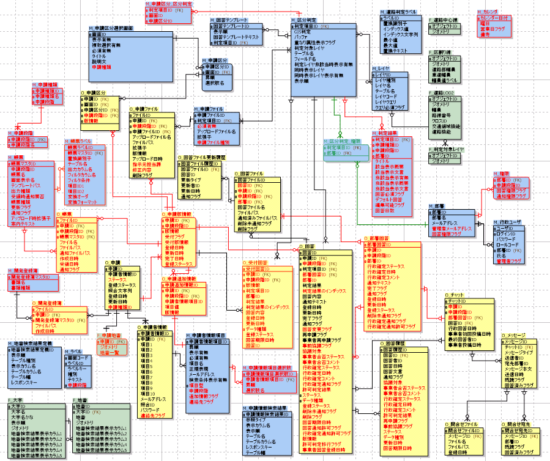
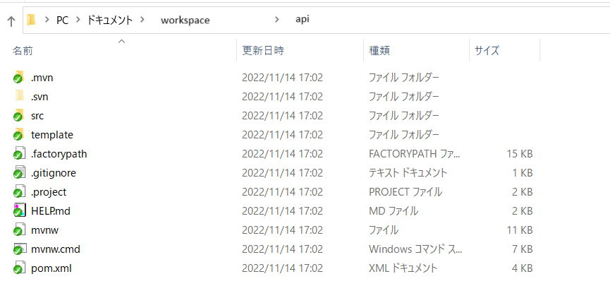
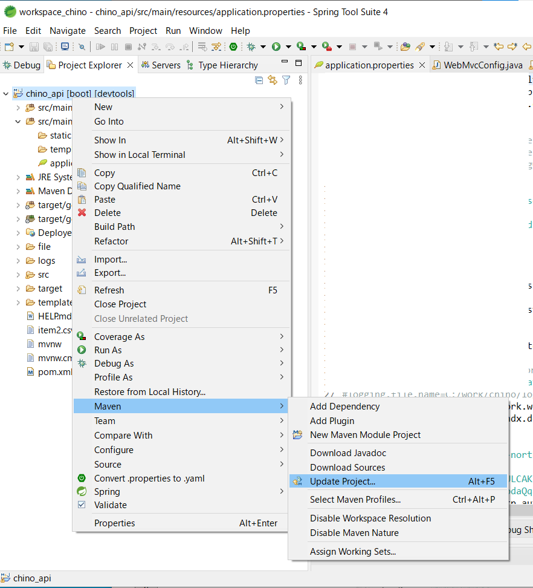
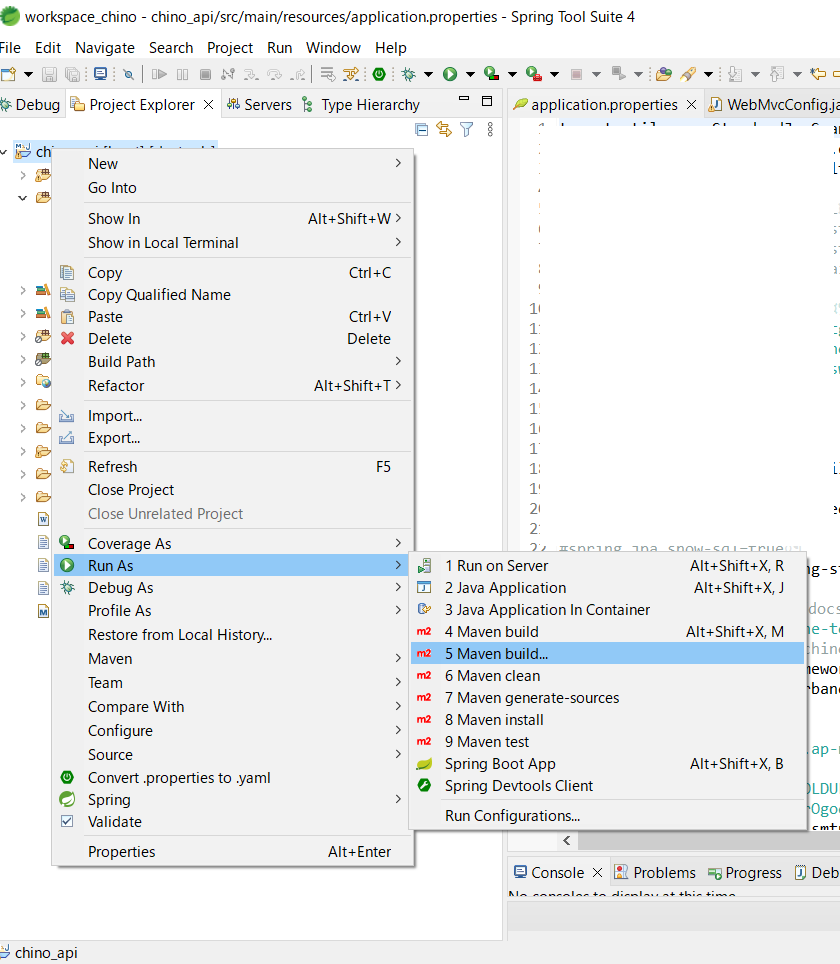

稼動環境構築手順書
1 本書について
本書では、開発許可申請管理システム（以下本システム）の稼働環境を構築する手順について記載します。
2 システム構成
本システム稼働環境の構成は以下になります。

Web/APサーバとSMTPサーバ/DBサーバ/ファイルサーバは同一のサーバでも稼働可能です。
以下では、上記稼働環境の前提で稼働環境構築手順を記載します。
なおSMTPサーバの構築については、本書の記載範囲外とします。
以下、本システムで利用するOS,SW,MWの一覧です。
| # | サーバ | 大機能 | ライセンス | 説明 |
|---|---|---|---|---|
| 1 | Web/APサーバ | CentOS 8 | GNU General Public License | Web/APサーバを稼働させるOS |
| 2 | Java1.8 | Oracle JDK License | GeoServer、カスタムアプリを稼働させるためのプラットフォーム | |
| 3 | apache | Apache License 2.0 | Webアプリで配信を行うためのWebサーバ | |
| 4 | PLATEAU VIEW | Apache License 2.0 | 3D都市モデルビューワ | |
| 5 | Terria | Apache License 2.0 | UI（ユーザーインターフェイス）の提供及びUIを介してCesium の描画機能を制御するためのライブラリ |
|
| 6 | Cesium | Apache License 2.0 | 3D都市モデルビューワ上にデータを描画するためのライブラリ | |
| 7 | React.js | MIT License | JavaScriptのフレームワーク内で機能するUIを構築するためのライブラリ | |
| 8 | marker.js | marker.js 2 Linkware License | 画像データへの図形や文字情報の書き込みをブラウザ上で行うライブラリ | |
| 9 | tiff.js | tiff.js License | Tiffファイルをブラウザで閲覧・編集可能なPNG形式に変換するライブラリ | |
| 10 | PDF.js | Apache License 2.0 | PDFファイルをプレビューするライブラリ | |
| 11 | Node.js | MIT License | 3D都市モデルビューワの実行環境 | |
| 12 | GeoServer | GNU GENERAL PUBLIC LICENSE Version 2 | 各種データをWMS及びWFSなどで配信するためのGISサーバ | |
| 13 | Apache POI | Apache License 2.0 | 帳票出力にて、Excel出力を行うライブラリ | |
| 14 | PDFBox | Apache License 2.0 | PDF文章を扱うライブラリで、PDFファイルの画像ファイル変換に利用 | |
| 15 | Tomcat | Apache License 2.0 | GeoServer、カスタムアプリを起動するJ2EEのSDK | |
| 16 | Spring boot | Apache License 2.0 | Javaで利用可能なWebアプリのフレームワーク | |
| 17 | DBサーバ | PostgresSQL | PostgreSQL License | 各種配信するデータを格納するデータベース |
| 18 | PostGIS | GNU General Public License | PostgreSQLで位置情報を扱うことを可能とするextention | |
| 19 | ファイルサーバ | 3DTile等配信データ | データベース以外で配信する3Dデータ等 | |
稼働環境は以下になります。
【クライアント環境】
動作環境：Windows10または11、Core i3以上、メモリ 4GB以上
必要なソフトウェア：Edge（最新版、IEモードは検証しない）
ネットワーク環境：必須（10Mbps以上、高速な回線を推奨）
【WEB/APサーバ環境】
動作環境：CentOS Version 8.5.2111
必要なソフトウェア：
Apache Version 2.4.37
Java Version 1.8.0_312 (OpenJDK 64-Bit Server VM)
Apache Tomcat Version 9.0.65
GeoServer Version 2.21.0
Node.js Version 16.17.0
【DBサーバ環境】
PostgreSQL Version 14.3
PostGIS Version 3.1
3 準備物一覧
以下、本システムを構築する際に必要となる準備物一覧になります。
アプリケーションとデータはGitHubリポジトリより取得してください。
GitHubリポジトリのフォルダ構成は下図の通りです。

【稼働環境】
Cent OS 8 Stream
【セットアップ環境】
稼働環境と80,8080,5432ポートでTCP通信可能であること
Windows10
【アプリケーション】
申請画面（3DViewer）ソースコード（/development-permission/SRC/3dview）
申請API（Springboot）ソースコード（/development-permission/SRC/api）
PDFビューワ（PDF.js）スタイルシート（/development-permission/SRC/pdfjs）
【環境構築ファイル】
（/development-permission/Settings/environment_settings 以下一式）
テーブル作成（/create_table.sql）
テーブルシーケンス作成（/sequence.sql）
マスタデータ作成（/create_master_data_sheet.xlsx）
ランドマーク表示作成ツール（/generate_landmark_billboard.py）
レイヤスタイルファイル（/layer_style_xxxxxx.sld）
レイヤSQLビュー定義ファイル（/layer_sql_xxxxxx.txt）
※ 道路判定で使用するレイヤスタイルファイルとレイヤSQLビュー定義ファイルは /road_layers 以下に格納されています。
【サンプルデータ】
（/development-permission/SampleData 以下一式）
大字（/f_district 以下一式）
地番（/f_lot_number 以下一式）
判定レイヤ（/judgement_layers 以下一式）
道路判定関連レイヤ（/road_layers 以下一式）
ランドマーク（/landmark 以下一式）
マスタデータ作成（/create_master_data_sheet.xlsx）
【セットアップ用SW】
GISソフト（本書ではQGISを利用）
SQLクライアントソフト（本書ではA5:SQL Mk-2を利用）
※そのほか構築の際に必須となるSWのインストールは手順の中に含めています。
4 稼働環境構築（事前準備）
構築対象：Web/APサーバ
検証済みサーバ環境：CentOS 8 Stream
※基本管理者アカウントで操作を行います。
管理者アカウントに切り替えます。
su -
SELinuxを一時的に無効にします。
（環境構築時の妨げになる為、ここでは一時的に無効化します）
setenforce 0
4-1.Node.js v10.0 以降、npm v6.0 以降をインストール
現在、有効になっている Node.js のバージョンを確認します。
dnf module list nodejs
バージョンを指定してインストールを行います。
dnf module -y install nodejs:16
有効になっているnodejsのバージョンを確認します。
node -v
4-2.yarn v1.19.0 以降をインストール
yarnのインストールを行います。
curl -sL https://dl.yarnpkg.com/rpm/yarn.repo | sudo tee /etc/yum.repos.d/yarn.repo
yum install yarn
バージョンを確認します。
yarn -v
5 稼働環境構築（MW,SW）
検証済みサーバ環境：CentOS 8 Stream
構築対象；Web/APサーバ（DBサーバ）
※基本管理者アカウントで操作を行います。
管理者アカウントに切り替えます。
su -
SELinuxを一時的に無効にします。
（環境構築時の妨げになる為、ここでは一時的に無効化します）
setenforce 0
5-1.Apache2.4のインストール
Apache httpd 2.4 をインストールします。
yum -y install httpdインストール後バージョンを確認します。
httpd -version自動起動の設定を行います。
systemctl enable httpd.service※起動
「http://<サーバマシンのIPアドレス>/」でアクセスできることを確認してください。
systemctl start httpd.service※再起動
systemctl restart httpd.service※停止
systemctl stop httpd.service※必要な場合、ファイアーウォールの設定を行います。
firewall-cmd --zone=public --add-service=http –-permanent firewall-cmd --reload
5-2.OpenJDK 8 のインストール
java-1.8.0-openjdkをインストールします。
yum install java-1.8.0-openjdk-develインストール後バージョンを確認します。
Java -versionJava Pathの確認
dirname $(readlink $(readlink $(which java)))環境変数を設定します。
vi /etc/profile最終行に以下の内容を追記し保存します。（/usr/lib/jvm以降は適宜バージョンを確認）
export JAVA_HOME=/usr/lib/jvm/java-1.8.0-openjdk-1.8.0.312.b07-2.el8_5.x86_64 export PATH=$PATH:$JAVA_HOME/bin export CLASSPATH=.:$JAVA_HOME/jre/lib:$JAVA_HOME/lib:$JAVA_HOME/lib/tools.jar環境変数の設定を反映します。
source /etc/profile環境変数の値を出力します。
echo $JAVA_HOMEデフォルトのJDK設定を確認します。
alternatives --config java
5-3.Tomcat 9のインストール
ユーザーを作成します。
useradd -s /sbin/nologin tomcathomeなどに移動し、tomcatのダウンロードを行います。(適宜tomcatのversionを確認)
cd /home/ curl -O http://ftp.yz.yamagata-u.ac.jp/pub/network/apache/tomcat/tomcat-9/v9.0.70/bin/apache-tomcat-9.0.70.tar.gz展開及びファイル移動を行います。
tar xvzf apache-tomcat-9.0.70.tar.gz -C /opt ln -s /opt/apache-tomcat-9.0.70 /opt/apache-tomcat chown -R tomcat. /opt/apache-tomcat-9.0.70パスを通します。
echo "export CATALINA_HOME=/opt/apache-tomcat" > /etc/profile.d/tomcat.sh source /etc/profileサービス定義ファイルを作成します。
vi /etc/systemd/system/tomcat.service以下全て入力して保存します。
[Unit] Description=Apache Tomcat 9 After=syslog.target network.target [Service] User=tomcat Group=tomcat Type=oneshot PIDFile=/opt/apache-tomcat/tomcat.pid RemainAfterExit=yes ExecStart=/opt/apache-tomcat/bin/startup.sh ExecStop=/opt/apache-tomcat/bin/shutdown.sh [Install] WantedBy=multi-user.target権限を付与します。
chmod 755 /etc/systemd/system/tomcat.service自動起動の設定を行います。
systemctl enable tomcatタイムゾーンの設定とHttpHeaderサイズの設定を行います。
環境設定ファイルを新規で作成してください。
vi /opt/apache-tomcat/bin/setenv.sh下記を入力後、保存してください。
CATALINA_OPTS="-Duser.timezone=Asia/Tokyo"次にserver.xmlを編集します。
vi /opt/apache-tomcat/conf/server.xml下記をConnectorタグに追加後、保存してください。
maxHttpHeaderSize="2097152"修正箇所
<Connector port="8080" maxHttpHeaderSize="2097152" protocol="HTTP/1.1" connectionTimeout="20000" redirectPort="8443">設定を反映させるため、再起動します。
systemctl restart tomcat※起動
「http://<サーバマシンのIPアドレス>:8080/」でアクセスできることを確認してください。
systemctl start tomcat※再起動
systemctl restart tomcat※停止
systemctl stop tomcat※必要な場合、ファイアーウォールの設定を行います。
firewall-cmd --add-port=8080/tcp --zone=public --permanent systemctl restart firewalld
5-4.GeoServer2.21.xのインストール
SOURCE FORGEで配信されているため、
ブラウザから「https://geoserver.org/release/stable/」にアクセス後、Web Archiveからwarのダウンロード及び解凍を行います。

解凍したwarをtomcatに配備します。
cd "warが置いてある場所" mv geoserver.war /opt/apache-tomcat/webapps/展開後、「http://<サーバマシンのIPアドレス>:8080/geoserver/」でアクセスできることを確認してください。
5-5.PostgreSQL14のインストール
※本書では、Web/APサーバとDBサーバを同一のサーバ上に構築する手順で記載しております。両サーバを別環境で構築する場合、本章の以下手順はDBサーバ上で実施してください。
PostgreSQLのリポジトリRPMのインストールを行います。
dnf install -y https://download.postgresql.org/pub/repos/yum/reporpms/EL-8-x86_64/pgdg-redhat-repo-latest.noarch.rpm組み込みPostgreSQLモジュールを無効化します。
dnf -qy module disable postgresqlPostgreSQL 14をインストールします。
dnf install -y postgresql14-servermanコマンドでマニュアル参照を行えるように設定します。
vi /etc/man_db.conf以下を追加して保存してください。
MANDATORY_MANPATH /usr/pgsql-14/share/man/データベースの初期化（データベースクラスタの作成）を行います。
PGSETUP_INITDB_OPTIONS='--encoding=UTF-8 --no-locale' /usr/pgsql-14/bin/postgresql-14-setup initdb自動起動の設定を行います。
systemctl enable postgresql-14※起動
systemctl start postgresql-14※停止
systemctl stop postgresql-14※postgresユーザーへ切り替え
su - postgres※終了
exit※PostgreSQL の接続
psql※終了
exit※必要な場合、ファイアーウォールの設定を行います。
firewall-cmd --permanent --add-port=5432/tcp firewall-cmd --reload※外部からPostgreSQL14への接続を許可する際は下記の設定を変更してください
postgresql.confの修正
cd /var/lib/pgsql/14/data vi postgresql.conflisten_addressesとportのコメントアウトを外す(セキュリティに留意して見直してください)
listen_addresses = '*' port = 5432pg_hba.confの修正
cd /var/lib/pgsql/14/data vi pg_hba.confIPv4の「METHOD」を「password」にし、「ADDRESS」を「all」に変更(セキュリティに留意して見直してください)
5-6.PostGIS3のインストール(※同環境にpostgresを入れる場合のみ)
EPEL および PowerTools リポジトリを有効にします。
yum -y install https://download.postgresql.org/pub/repos/yum/reporpms/EL-8-x86_64/pgdg-redhat-repo-latest.noarch.rpm dnf -y install https://dl.fedoraproject.org/pub/epel/epel-release-latest-8.noarch.rpm dnf install dnf-plugins-core dnf config-manager --set-enabled powertoolsデフォルトの PostgreSQL AppStream リポジトリを無効にします。
dnf -qy module disable postgresqlPostGISをインストールします。
yum install postgis32_14
5-7.DBの作成
ロールの作成は必要に応じて行ってください。
postgresユーザへ切り替え後、PostgreSQL に接続します。
su - postgres psqlロールを作成します。
CREATE ROLE devps WITH SUPERUSER CREATEDB CREATEROLE INHERIT LOGIN REPLICATION BYPASSRLS ENCRYPTED PASSWORD 'password';その他オプション
CREATE ROLE name [ [ WITH ] option [ ... ] ] option: SUPERUSER | NOSUPERUSER | CREATEDB | NOCREATEDB | CREATEROLE | NOCREATEROLE | INHERIT | NOINHERIT | LOGIN | NOLOGIN | REPLICATION | NOREPLICATION | BYPASSRLS | NOBYPASSRLS | CONNECTION LIMIT connlimit | [ ENCRYPTED ] PASSWORD 'password' | VALID UNTIL 'timestamp' | IN ROLE role_name [, ...] | IN GROUP role_name [, ...] | ROLE role_name [, ...] | ADMIN role_name [, ...] | USER role_name [, ...] | SYSID uidPostgreSQLを切断
\qpostgresユーザをログアウト
exitpostgresユーザーへ切り替え後、DB作成前にテーブルスペース用のディレクトリを作成します。
postgresユーザへ切り替えます。
su - postgresテーブルスペース用のディレクトリを作成します。
mkdir /var/lib/pgsql/14/data/devps_tbs作成したディレクトリが一覧に表示されていることを確認してください。
ls -l /var/lib/pgsql/14/data/テーブルスペースとデータベースの作成
PostgreSQL に接続します。
psqlテーブルスペースを作成します。(queryは必要に応じて変更してください)
CREATE TABLESPACE devps_tbs OWNER devps LOCATION '/var/lib/pgsql/14/data/devps_tbs'; COMMENT ON TABLESPACE devps_tbs IS '稼働環境用テーブルスペース'; GRANT CREATE ON TABLESPACE devps_tbs TO devps;作成したテーブルスペースが一覧に表示されていることを確認してください。
\dbデータベースを作成します。(queryは必要に応じて変更してください)
CREATE DATABASE devps_db WITH OWNER = devps ENCODING = 'UTF8' LC_COLLATE = 'C' LC_CTYPE = 'C' TABLESPACE = devps_tbs ALLOW_CONNECTIONS = true CONNECTION LIMIT = -1; COMMENT ON DATABASE devps_db IS '稼働環境用データベース';作成したデータベースが一覧に表示されていることを確認してください。
\lPostgreSQLを切断
\qpostgresユーザをログアウト
exit
5-8.PostGISの有効化
postgresユーザへ切り替え後、DB に接続します。
su - postgres psql -h localhost -p 5432 -U devps -d devps_dbPostGISの有効化を行います。
CREATE EXTENSION postgis;正常に有効化されているかバージョン確認を行います。
SELECT PostGIS_version();
6 テーブル作成（PostgreSQL）
前章で作成したデータベース上に、テーブルを作成します。
本章はセットアップ環境からデータベースに接続できる前提になります。
セットアップ環境でDBクライアントツールを立ち上げ、データベースに接続します。
※本書ではA5:SQL Mk-2を使用した手順を記載します。
A5:SQL Mk-2を開き、サイドメニューの「データベース」を右クリックし、表示されるメニューから「データベースの追加と削除」をクリックします。


「追加」をクリックします。

「PostgreSQL（直接接続）」をクリックします。

前章で設定したデータベースの接続情報を入力し、「OK」をクリックします。

サイドメニューの「データベース」の下に、登録したデータベースが表示されます。

データベースの折り畳みボタンをクリックすると、以下のダイアログが表示されます。認証情報を入力し、「接続」を押下します。

トップメニューバーから、「ファイル」「新規」をクリックします。

「SQL」を選択します。

タブが新しく開きます。
※データベースに接続した状態の場合、タブ上部のデータベース名の欄がハイライトされます。

development-permission/Settings/environment_settings/create_table.sqlを取得します。テキストエディタで開き、9.で開いたタブにコピーします。

「実行」ボタンを押下します。
サイドメニューのデータベースからメニューを開き、「public」スキーマの中にテーブルが追加されていることを確認します。

development-permission/Settings/environment_settings/sequence.sqlを取得し、ファイルを開き、同様に実行します。

7 マスタデータ取込
本システムで用いるマスタデータを取り込みます。
取込対象となるマスタデータは以下になります。
サンプルデータを使用される場合は、
development-permission/SampleData/create_master_data_sheet.xlsx
を使用してください。
独自にマスタデータを作成する場合は、
development-permission/Settings/create_master_data_sheet.xlsx
を使用してください。
| テーブル名（論理名/物理名） | 説明 | 備考 |
|---|---|---|
M_申請区分選択画面 m_application_category_ selection_view |
申請区分の種類 最大10種類まで設定可能 |
|
M_申請区分 m_application_category |
各申請区分の選択肢 | |
M_レイヤ m_layer |
判定で使用するレイヤ | |
M_部署 m_department |
部署一覧 | |
M_区分判定 m_category_judgemnt |
判定項目 | |
M_申請ファイル m_application_file |
申請ファイル一覧 | |
M_ラベル m_label |
各画面表示内容の定義 | |
M_地番検索定義 m_lot_number_search_result_ definition |
地番検索結果テーブルの表示項目 | |
M_申請情報検索結果 m_application_sarch_result |
申請者情報検索結果テーブルの表示項目 | |
M_申請者情報項目 m_applicant_information_item |
申請登録時に入力する申請者情報項目 | |
M_行政ユーザ m_government_user |
行政ユーザ一覧 | |
M_回答テンプレート m_answer_template |
行政担当者が入力する回答内容のテンプレート一覧 | |
M_道路判定ラベル m_road_judge_label |
道路判定結果の案内文言一覧 | 道路判定を有効にしない場合本テーブルは不要。 |
本システムのER図を以下に記載します。
本章におけるセットアップ対象のマスタデータは青色のテーブルになります。
赤字のテーブルおよびカラムは令和5年度実証において追加された内容です。 各テーブル共通の手順は以下になります。
「create_master_data_sheet.xlsx」を編集します。各テーブルに対応するシートの項目を埋め、マスタデータを作成します。シートの各列の設定内容は次節以降の各テーブルの記載を参照してください。
※サンプルデータ（development-permission/SampleData/create_master_data_sheet.xlsx）をそのまま使用される場合は編集不要です。
※独自にマスタデータを作成する場合は、
development-permission/Settings/ create_master_data_sheet.xlsxの各シートに参考のサンプルデータを記載しておりますので、変更してください。


マスタデータの各シートをCSVにエクスポートします。

Excelを閉じ、エクスポートされたCSVファイルをメモ帳やテキストエディタ等で開きます。空白行がエクスポートされている場合削除します。


※削除しなかった場合取込時に以下のようなエラーメッセージが表示されます。

SQLクライアントツールからエクスポートしたCSVファイルを取り込みます。
以下ではA5M2での取込手順を記載します。
取り込みを行うテーブルをダブルクリックして開きます。

CSV取込ボタンを押下します。

CSVのカラム名とデータセットのカラム名が対応していることと文字コードを確認し、「インポート」を押下します。

インポートに成功すると以下のダイアログが表示されます。

データが正しく取り込めているか確認してください。

※エクスポートしたCSVファイルをExcelで閉じていない場合取込ができません。
※カンマを文字列内に含んでいる場合CSVを取り込めないことがあります。CSVファイルをテキストエディタやメモ帳等で開き、文字列がダブルクオーテーションで囲まれているか確認してください。
※0埋めした数字をIDで設定していた場合、Excelで正しくエクスポートされない場合があるのでご注意ください。
※ID等をカンマ区切りでExcelに入力した場合、桁区切りと認識されます。冒頭に「’」を入力して文字列として認識させてください。
例）「’1001,1002,1003」
テーブル間でIDを外部キーとして共有しているため、以下手順に示す順番でマスタデータのシートを作成してください。データベースに取り込む順番は任意で構いません。
7-1. M_申請区分選択画面（m_application_category_selection_view）
create_master_data_sheet.xlsxで作成するカラムは以下の通りです。
※view_idは「1001」～「1010」まで固定で必ず設定してください。
※表示に使用しない画面（申請区分）はview_flagを0に設定してください。
独自にデータをカスタマイズする場合、シート上のサンプルデータは削除してください。
| 列番号 | カラム名 | エイリアス | 必須 | 説明 |
|---|---|---|---|---|
| A | view_id | 画面ID | ○ | 「1001」～「1010」まで固定で設定すること |
| B | view_flag | 表示有無 | ○ | 1=表示,0=非表示 のいずれかで設定 |
| C | multiple_flag | 複数選択有無 | ○ | 1=単体選択,0=複数選択 のいずれかで設定 |
| D | require_flag | 必須有無 | ○ | 1=選択必須, 0=選択任意 のいずれかで設定 |
| E | title | タイトル | ○ | 申請区分選択画面で表示するタイトル。 帳票や申請情報検索・詳細等の各画面で表示する申請区分項目名としても使用 |
| F | description | 説明文 | ○ | 申請区分選択画面に表示する説明文 HTMLで記載可能 |
| G | judgement_type | 概況診断タイプ | ○ | 申請区分選択画面で概況診断タイプ選択後に表示する申請区分の切替フラグ。 カンマ区切りで表示対象の概況診断タイプのコードを格納する。 |
7-2. M_申請区分（m_application_category）
create_master_data_sheet.xlsxで作成するカラムは以下の通りです。
必要な申請区分数の行を作成してください。
独自にデータをカスタマイズする場合、シート上のサンプルデータは削除してください。
| 列番号 | カラム名 | エイリアス | 必須 | 説明 |
|---|---|---|---|---|
| A | category_id | 申請区分ID | ○ | 10桁以内でレコードごとに一意のIDを設定すること 例：2001,2002,2003,・・・ |
| B | view_id | 画面ID | ○ | 申請区分がどの画面に対応しているかを設定 M_申請区分選択画面で設定したview_idの値と対応させること |
| C | order | 昇順 | ○ | 申請区分選択画面での選択肢表示順を設定 正の整数で設定すること |
| D | label_name | 選択肢名 | ○ | 申請区分選択画面の選択肢として表示する選択肢名を設定 帳票や申請情報検索・詳細等の各画面で表示する申請区分名としても使用 |
7-3. M_レイヤ（m_layer）
create_master_data_sheet.xlsxで作成するカラムは以下の通りです。
必要なレイヤ数の行を作成してください。
独自にデータをカスタマイズする場合、シート上のサンプルデータは削除してください。
※table_nameは9 判定レイヤ取込、layer_codeとlayer_queryは14 GeoServerレイヤ作成実施後に設定してください。
※ 7-5. M_区分判定を設定する際にレイヤIDが必要となります。
| 列番号 | カラム名 | エイリアス | 必須 | 説明 |
|---|---|---|---|---|
| A | layer_id | レイヤID | ○ | 10桁以内でレコードごとに一意のIDを設定すること 例：2001,2002,2003,・・・ |
| B | layer_type | レイヤ種別 | ○ | 1=判定対象レイヤ,0=関連レイヤ のいずれかで設定 ※判定対象レイヤ・・・概況診断のGIS判定で使用するレイヤ ※関連レイヤ・・・概況診断のGIS判定では使用せず、概況診断結果表示時に判定対象レイヤと合わせて表示するレイヤ（使用例：バッファ判定のバッファ径を表示） |
| C | layer_name | レイヤ名 | ○ | 概況診断結果表示時に表示するレイヤ名 |
| D | table_name | テーブル名 | ○ | 概況診断で使用する判定対象テーブルのテーブル名 |
| E | layer_code | レイヤコード | ○ | GeoServerで設定したレイヤ名 「ワークスペース名:レイヤ名」のフォーマット |
| F | layer_query | レイヤクエリ | GeoServerのSQLビューでSQLビューパラメータを設定しているレイヤに問い合わせる際に使用するクエリ「パラメータ1:値;パラメータ2:値;パラメータ3:値」のフォーマット。 判定レイヤの属性情報を使ってフィルタ条件を設定する場合、「値」の箇所に「@1」のように「@」+「M_区分判定.フィールド名でカンマ区切り指定したフィールド名の順番」を記載。 また、道路判定で使用する各レイヤの表示設定については14-4. 道路判定レイヤを作成するを参照。 使用していない場合空欄で可 |
|
| G | query_require_flag | クエリ必須フラグ | ○ | layer_queryを使用するかどうか 1=必要,0=不要のいずれかで設定 |
7-4. M_部署（m_department）
create_master_data_sheet.xlsxで作成するカラムは以下の通りです。
必要な部署数の行を作成してください。
独自にデータをカスタマイズする場合、シート上のサンプルデータは削除してください。
※ 7-5. M_区分判定を設定する際に部署IDが必要となります。| 列番号 | カラム名 | エイリアス | 必須 | 説明 |
|---|---|---|---|---|
| A | department_id | 部署ID | ○ | 10桁以内でレコードごとに一意のIDを設定すること 例：2001,2002,2003,・・・ |
| B | department_name | 部署名 | ○ | 部署の名称 |
| C | mail_address | メールアドレス | ○ | 部署宛にメール通知を行うメールアドレス カンマ区切りで複数指定可 ※設定したメールアドレスに通知が飛ばされるため、テスト時はテスト用のメールアドレスで設定し、本番運用時に実運用のメールアドレスに変更することを推奨 |
| D | answer_authority_flag | 回答権限フラグ | ○ | 回答通知を行う権限の有無 1=権限あり,0=権限なし のいずれかで設定 |
7-5. M_区分判定（m_category_judgement）
create_master_data_sheet.xlsxで作成するカラムは以下の通りです。
必要な区分判定分の行を作成してください。
独自にデータをカスタマイズする場合、シート上のサンプルデータは削除してください。
道路判定を使用しない場合、シート上の道路判定の行（gis_judgementが5）は削除してください。
※ 7-6. M_申請ファイルを設定する際に判定項目IDが必要となります。
| 列番号 | カラム名 | エイリアス | 必須 | 説明 |
|---|---|---|---|---|
| A | judgement_item_id | 判定項目ID | ○ | 10桁以内でレコードごとに一意のIDを設定すること 例：3001,3002,3003,・・・ |
| B | department_id | 担当部署ID | ○ | 判定項目に回答を実施する担当部署の部署ID 7-4. M_部署で設定したIDを使用すること |
| C | category_1 | 区分1 | ○ | 画面ID=1001と紐づく申請区分IDのうち、区分判定で該当と判定したい申請区分IDをカンマ区切りで設定する 判定に用いない場合0を格納すること |
| D | category_2 | 区分2 | ○ | 画面ID=1002と紐づく申請区分IDのうち、区分判定で該当と判定したい申請区分IDをカンマ区切りで設定する 判定に用いない場合0を格納すること |
| E | category_3 | 区分3 | ○ | 画面ID=1003と紐づく申請区分IDのうち、区分判定で該当と判定したい申請区分IDをカンマ区切りで設定する 判定に用いない場合0を格納すること |
| F | category_4 | 区分4 | ○ | 画面ID=1004と紐づく申請区分IDのうち、区分判定で該当と判定したい申請区分IDをカンマ区切りで設定する 判定に用いない場合0を格納すること |
| G | category_5 | 区分5 | ○ | 画面ID=1005と紐づく申請区分IDのうち、区分判定で該当と判定したい申請区分IDをカンマ区切りで設定する 判定に用いない場合0を格納すること |
| H | category_6 | 区分6 | ○ | 画面ID=1006と紐づく申請区分IDのうち、区分判定で該当と判定したい申請区分IDをカンマ区切りで設定する 判定に用いない場合0を格納すること |
| I | category_7 | 区分7 | ○ | 画面ID=1007と紐づく申請区分IDのうち、区分判定で該当と判定したい申請区分IDをカンマ区切りで設定する 判定に用いない場合0を格納すること |
| J | category_8 | 区分8 | ○ | 画面ID=1008と紐づく申請区分IDのうち、区分判定で該当と判定したい申請区分IDをカンマ区切りで設定する 判定に用いない場合0を格納すること |
| K | category_9 | 区分9 | ○ | 画面ID=1009と紐づく申請区分IDのうち、区分判定で該当と判定したい申請区分IDをカンマ区切りで設定する 判定に用いない場合0を格納すること |
| L | category_10 | 区分10 | ○ | 画面ID=1010と紐づく申請区分IDのうち、区分判定で該当と判定したい申請区分IDをカンマ区切りで設定する 判定に用いない場合0を格納すること |
| M | gis_judgement | GIS判定 | ○ | GIS判定を行うか否かと、GIS判定方式を設定 0=GIS判定なし, 1=重なり判定, 2=非重なり判定, 3=バッファ重なり判定, 4=バッファ非重なり判定 5=道路判定 のいずれかで設定 |
| N | buffer | バッファ | ○ | バッファ判定時のバッファ半径(m,小数可) バッファ判定を使用しない場合0とすること |
| O | display_attribute_flag | 重なり属性表示フラグ | ○ | GIS重なり属性表示を行うか否かと、属性表示方法を設定 0=属性表示しない 1=区切り文字で区切って属性表示 2=改行して属性表示 3=概況診断結果一覧テーブルで行を分けて属性表示 ※属性表示する場合、table_nameとfield_nameを設定すること ※区切り文字はapplication.propertiesで設定。 |
| P | judgement_layer | 判定対象レイヤ | GIS判定で使用するレイヤのレイヤID。 カンマ区切りで複数指定可 ※M_レイヤで設定したIDを使用すること ※GIS判定では必須、GIS判定以外では不要 ※図形重なり属性表示を行う場合複数指定不可 |
|
| Q | title | タイトル | ○ | 概況診断結果一覧と回答一覧の「対象」列に表示する内容 改行可 |
| R | applicable_summary | 該当表示概要 | ○ | 該当時に帳票の概要に出力する文字列 改行可 |
| S | applicable_description | 該当表示文言 | ○ | 該当時に概況診断結果一覧のツールチップと帳票の詳細に表示・出力する文字列 改行可 <a></a>で囲んだ範囲の文字列をリンクとして表示 <span></span>で囲んだ範囲の文字列はstyle属性でスタイル設定可能 属性表示したい場合、表示したい箇所に「@1」のように「@」+「フィールド名の順番」を記載 地番と判定対象レイヤの最短距離を表示したい場合、表示したい箇所に「{distance}」と記載 道路判定(gis_judgement=5)の場合、判定結果による文言変更箇所に置換文字列を設定する。置換文字列の設定内容については、7-13. M_道路判定ラベルを参照のこと |
| T | non_applicable_display_flag | 非該当表示有無 | ○ | 非該当時に概況診断結果一覧に表示するか否かを設定 1=表示, 0=非表示 のいずれかで設定 |
| U | non_applicable_summary | 非該当表示概要 | 非該当時に帳票の概要に出力する文字列 改行可 |
|
| V | non_applicable_description | 非該当表示文言 | 非該当時に概況診断結果一覧のツールチップと帳票の詳細に表示・出力する文字列 改行可 <a></a>で囲んだ範囲の文字列をリンクとして表示 |
|
| W | table_name | テーブル名 | 属性表示するテーブル名 ※judgement_layerで指定した判定レイヤのテーブル名を指定すること |
|
| X | field_name | フィールド名 | 属性表示するフィールド名 カンマ区切りで複数設定可能 ※【W】で指定したテーブルのフィールド名(カラム名)を指定すること |
|
| Y | non_applicable_layer_display_flag | 判定レイヤ非該当時表示有無 | ○ | 非該当時も判定レイヤを画面表示するか否か ※該当時はレイヤを設定している場合必ず表示 1=表示,0=非表示 のいずれかで設定 |
| Z | simultaneous_display_layer | 同時表示レイヤ | 概況診断結果一覧画面で判定対象レイヤと同時に表示する関連レイヤのID（カンマ区切り） | |
| AA | simultaneous_display_layer_flag | 同時表示レイヤ表示有無 | ○ | 概況診断結果一覧画面で判定対象レイヤと同時に関連レイヤを表示するか否か 1=表示, 0=非表示 のいずれかで設定 |
| AB | disp_order | 表示順 | ○ | 概況診断結果一覧画面および帳票における表示順 小数で設定する |
| AC | answer_require_flag | 回答必須フラグ | ○ | 区分判定に行政による回答が必須か否か 任意の場合、申請受付時にデフォルト回答を回答として登録・通知する。 1=必須, 0=任意 のいずれかで設定 |
| AD | default_answer | デフォルト回答 | 申請受付時に自動で設定する回答文言 | |
| AE | answer_editable_flag | 編集可能フラグ | ○ | 回答の編集を可能とするか否か 1=編集可能, 0=編集不可 ※answer_require_flagが1かつanswer_editable_flagが0のケースは指定できません |
| AF | answer_days | 回答日数 | 行政担当者が該当の条項に回答する目安日数を設定。事業者にはすべての該当条項の回答日数の最大値+システム設定したバッファ日数が回答日数として通知される。行政担当者には担当の部署の該当条項の回答日数の最大値が回答日数として通知される。 |
7-6. M_申請ファイル（m_application_file）
create_master_data_sheet.xlsxで作成するカラムは以下の通りです。
必要な申請ファイル分の行を作成してください。
独自にデータをカスタマイズする場合、シート上のサンプルデータは削除してください。
※概況診断結果レポートは区分判定IDごとに設定が必要になります。サンプルデータの内容をコピーして区分判定IDのみ変更して設定してください。概況診断結果レポートは申請ファイルIDを「9999」に設定する必要があります。
| 列番号 | カラム名 | エイリアス | 必須 | 説明 |
|---|---|---|---|---|
| A | application_file_id | 申請ファイルID | ○ | 申請ファイルを識別する10桁以内のID 同じ申請ファイルを複数の判定項目に紐づけたい場合、同じ申請ファイルIDで異なる判定項目IDのレコードを作成すること |
| B | judgement_item_id | 判定項目ID | ○ | 申請ファイルと紐づける判定項目ID M_区分判定で設定した判定項目IDを設定すること |
| C | require_flag | 必須有無 | ○ | 申請登録時にファイルのアップロードが必須か否か 必須=1, 任意=0 のいずれかで設定 |
| D | upload_file_name | アップロードファイル名 | ○ | 申請登録画面や申請情報詳細画面等で表示する申請ファイル名称 |
| E | extension | 拡張子 | ○ | 利用可能な拡張子をカンマ区切りで設定 |
7-7. M_ラベル（m_label）
create_master_data_sheet.xlsxで作成するカラムは以下の通りです。
本テーブルは画面表示内容の設定で使用するため、必要に応じてカスタマイズしてください。
| 列番号 | カラム名 | エイリアス | 必須 | 説明 |
|---|---|---|---|---|
| A | view_code | 画面コード | ○ |
プログラム上で使用するためマスタデータ作成シートの内容を変更しないこと |
| B | label_id | ラベルID | ○ |
プログラム上で使用するためマスタデータ作成シートの内容を変更しないこと |
| C | label_ley | ラベルキー | ○ |
プログラム上で使用するためマスタデータ作成シートの内容を変更しないこと |
| D | label_type | 種別 | ○ | 0=事業者行政とも使用 1=事業者のみ使用 2=行政のみ使用 プログラム上で使用するためマスタデータ作成シートの内容を変更しないこと |
| E | label_text | テキスト | ○ | 画面表示で使用するラベルの文言 HTML埋め込み可能 必要に応じてマスタデータ作成シートの内容から変更 |
画面コード、ラベルIDと使用箇所の対応は下記の通りです。
| view_code | label_id | 使用箇所 | 備考 |
|---|---|---|---|
| 1000 | 1 | 利用者規約画面タイトル | |
| 1000 | 2 | 利用者規約画面説明文 | |
| 1000 | 3 | 利用者規約画面同意ボタン | |
| 1000 | 4 | 利用者規約画面ヘッダタイトル | |
| 1000 | 5 | 利用者規約画面利用目的選択説明文 | |
| 1000 | 6 | 利用者規約画面アンケート説明文 | |
| 1001 | 1 | 申請完了画面タイトル | |
| 1001 | 2 | 申請完了画面説明文 | |
| 1001 | 3 | 申請完了画面アンケート説明文 | |
| 1002 | 1 | 回答完了画面タイトル | |
| 1002 | 2 | 回答完了画面説明文 | 回答日数を表示したい場合、埋め込み表示する箇所に「${回答日数}」を設定する |
| 1003 | 1 | 回答通知完了画面タイトル | |
| 1003 | 2 | 回答通知完了画面説明文 | |
| 1004 | 1 | 行政ログイン画面ヘッダ | ○○市の部分を使用される自治体名に変更すること |
| 1005 | 1 | 概況診断結果画面説明文 | |
| 1006 | 1 | 申請ファイルアップロード画面アップロード説明文 | 1ファイル当たり容量上限、合計ファイル容量を埋め込み表示する箇所にそれぞれ「${maxFileSize}」、「${maxRequestFileSize}」を設定する |
7-8. M_地番検索結果定義（m_lot_number_search_result_definition）
create_master_data_sheet.xlsxで作成するカラムは以下の通りです。
本テーブルは画面表示内容の設定で使用するため、必要に応じてカスタマイズしてください。
| 列番号 | カラム名 | エイリアス | 必須 | 説明 |
|---|---|---|---|---|
| A | lot_number_search_definition_id | 地番検索結果定義ID | ○ | 10桁以内の一意のID |
| B | display_order | 表示順 | ○ | 地番検索結果テーブル上の列表示順（左始まり） 正の整数で設定 |
| C | table_type | テーブル種別 | ○ | 表示するデータを取得するテーブル 1=F_地番テーブル, 0=F_大字テーブルの いずれかで設定 |
| D | display_column_name | 表示カラム名 | ○ | テーブルヘッダとして表示する名称 |
| E | table_column_name | テーブルカラム名 | ○ | データを取得するときに参照するDB上のカラム名 result_column1～result_column5のいずれかを設定すること |
| F | table_width | テーブル幅 | ○ | テーブル幅を%指定で表示 全レコードの値の合計が60になること。 |
| G | response_key | レスポンスキー | ○ | プログラム上で使用するキー 任意の英小文字 |
7-9. M_申請情報検索結果（m_application_search_result）
create_master_data_sheet.xlsxで作成するカラムは以下の通りです。
本テーブルは画面表示内容の設定で使用するため、必要に応じてカスタマイズしてください。
| 列番号 | カラム名 | エイリアス | 必須 | 説明 |
|---|---|---|---|---|
| A | application_search_result_id | 申請情報検索結果ID | ○ | 10桁以内の一意のID |
| B | reference_type | 参照タイプ | ○ | 0=申請区分 1=申請者情報 2=その他 のいずれかで設定 |
| C | display_column_name | 表示カラム名 | ○ | テーブルヘッダとして表示する名称 |
| D | display_order | 表示順 | ○ | 申請情報検索結果テーブル上の列表示順（左始まり） 正の整数で設定 |
| E | table_name | テーブル名 | ○ | データを取得するときに参照するDB上のテーブル名 以下から設定可能 m_department o_applicant_information m_application_category o_application o_answer m_category_judgement |
| F | table_column_name | テーブルカラム名 | ○ | データを取得するときに参照するDB上のカラム名。 table_nameで m_application_category（M_申請区分）を指定していた場合、画面IDを設定する |
| G | response_key | レスポンスキー | ○ | プログラム上で使用するキー 任意の英小文字 |
| H | table_width | テーブル幅 | ○ | テーブル幅を%指定で表示 全レコードの値の合計が100になること。 |
7-10. M_申請者情報項目（m_applicant_information_item）
create_master_data_sheet.xlsxで作成するカラムは以下の通りです。
本テーブルは画面表示内容の設定で使用するため、必要に応じてカスタマイズしてください。
※最大10レコードまで作成できます。
| 列番号 | カラム名 | エイリアス | 必須 | 説明 |
|---|---|---|---|---|
| A | applicant_information_item_id | 申請者情報項目ID | ○ | 一意のID 「1001」から「1010」の範囲で設定すること |
| B | display_order | 昇順 | ○ | 申請情報入力画面の上からの表示順 正の整数で設定 |
| C | Display_flag | 表示有無 | ○ | 表示を行うか否か 1=表示, 0=非表示 のいずれかで設定 |
| D | require_flag | 必須有無 | ○ | 入力の必須有無 1=必須, 0=任意 のいずれかで設定 |
| E | item_name | 項目名 | ○ | 画面表示に使用する項目名 |
| F | regex | 正規表現 | 正規表現チェックで使用する正規表現 空の場合正規表現チェックは行わない |
|
| G | mail_address | メールアドレス | ○ | 通知に使用するメールアドレスか否か 1=メールアドレス, 0=非メールアドレス のいずれかで設定すること 必ず1つだけ値が「1」のレコードを作成すること。 |
| H | search_condition_flag | 検索条件表示有無 | ○ | 申請情報検索画面の検索条件として表示するか否か 1=表示, 0=非表示 のいずれかで設定 |
7-11. M_行政ユーザ（m_government_user）
create_master_data_sheet.xlsxで作成するカラムは以下の通りです。
必要な行政ユーザ分のデータを作成してください。
独自にデータをカスタマイズする場合、シート上のサンプルデータは削除してください。
サンプルデータのパスワードは「superStrongP@ssword」で設定しています。セキュリティの観点から後述の手順でパスワードのハッシュを生成し、修正してください。
| 列番号 | カラム名 | エイリアス | 必須 | 説明 |
|---|---|---|---|---|
| A | user_id | ユーザID | ○ | 10桁以内の一意のID |
| B | login_id | ログインID | ○ | ログイン時に入力するID |
| C | password | パスワード | ○ | ログイン時に入力するパスワード ※元のパスワード文字列をハッシュ化して登録すること。ハッシュ作成手順は後述 |
| D | role_code | ロールコード | ○ | 1=事業者, 2=行政 のいずれかで設定 ※事業者のユーザは作成不要です |
| E | department_id | 部署ID | ○ | ユーザの所属部署ID 7-4. M_部署で設定したIDを設定すること |
| F | user_name | 氏名 |
パスワード用のハッシュは以下の手順で作成してください。
※ハッシュの生成は16.アプリケーションデプロイ（Spring Boot） が完了してから可能です。
Spring Tool Suite 4を開き、プロジェクトを開きます。

developmentpermission.util.AuthUtil.javaを開きます。

AuthUtil.javaの末尾、public class AuthUtil { }を閉じている中括弧の直前に以下のコードを追記します。
/\*\* \* ハッシュ生成確認用 \* \* @param args 引数(使用しない) \*/ public static void main(String\[\] args) { System.out.println(AuthUtil.createHash("superStrongP@ssword")); }「superStrongP@ssword」の部分をパスワードにしたい文字列に置換します。
「developpermissionapi」を右クリックし、「実行」>「Spring Boot アプリケーション」を押下します。

「Javaアプリケーションを選択」で「AuthUtil」を選択し、「OK」を押下します。

「コンソール」に実行結果のハッシュ文字列が出力されるので、コピーして「create_master_data_sheet.xlsx」の「M_行政ユーザ」シートの「password」列のパスワードを設定したいユーザの行に貼り付けます。


-
- でパスワード文字列を入力した部分を変更して、作成する行政ユーザ分のパスワードを作成します。
すべてのパスワードを作成し終えたら、4. で追記したコードを削除します。
7-12. M_回答テンプレート（m_answer_template）
create_master_data_sheet.xlsxで作成するカラムは以下の通りです。
テンプレートの設定が区分判定ごとに、必要数の行を作成してください。
| 列番号 | カラム名 | エイリアス | 必須 | 説明 |
|---|---|---|---|---|
| A | answer_template_id | 回答テンプレートID | ○ |
一意の正の整数にすること |
| B | disp_order | 表示順 | ○ |
回答テンプレート選択時の表示順を設定 |
| C | answer_template_text | 回答テンプレートテキスト | ○ |
回答テンプレート文言を設定 |
| D | judgement_item_id | 判定項目ID | ○ |
回答テンプレート設定対象の区分判定IDを設定すること（7-5. M_区分判定参照） |
7-13. M_道路判定ラベル（m_road_judge_label）
create_master_data_sheet.xlsxで作成するカラムは以下の通りです。
道路判定を使用しない場合本テーブルの作成は不要です。
| 列番号 | カラム名 | エイリアス | 必須 | 説明 |
|---|---|---|---|---|
| A | label_id | ラベルID | ○ |
一意の正の整数を設定。 |
| B | replace_identify | 置換識別子 | ○ |
M_区分判定の該当表示文言に設定した識別子。識別子はapplication.propertiesの設定値にしたがう。 |
| C | index_value | インデックス値 |
同じ置換識別子を判定結果により案内文言を変更するために使用するインデックス値。道路判定結果総括、区割り線取得結果、隣接歩道判定結果、最大幅員判定結果、最小幅員判定結果で使用。インデックス値はapplication.propertiesの設定値にしたがう。 |
|
| D | index_text | インデックス文字列 |
同じ置換識別子を判定結果により案内文言を変更するために使用するインデックス文字列。道路種別判定結果で使用。対象のインデックス文字列はapplication.propertiesの設定値にしたがう。 |
|
| E | min_value | 最小値 |
幅員値の判定結果により案内文言を変更するために使用する。最小値以上最大値未満の時該当レコードの文言を案内する。 |
|
| F | max_value | 最大値 |
幅員値の判定結果により案内文言を変更するために使用する。最小値以上最大値未満の時該当レコードの文言を案内する。 |
|
| G | replace_text | 置換テキスト |
置換後のテキストを設定。 <a></a>で囲んだ範囲の文字列をリンクとして表示 <span></span>で囲んだ範囲の文字列はstyle属性でスタイル設定可能 |
本テーブルの設定値は下表の通り設定してください。
replace_identifyの文字列とindex_valueの定義値はapplication.propertiesで設定変更可能です。
| 判定対象 | replace_identify設定値 ※M_区分判定の該当表示文言にも設定 |
判定結果 | 設定値（カラム=値） | 備考 |
|---|---|---|---|---|
| 道路判定結果総括 | {width_text_area} | 正常に判定終了 | index_value=0 | |
| 幅員値に不明箇所がある | index_value=9999 | |||
| 区割り線取得結果 | {split_line_result_area} | 両方向で区割り線取得 | index_value=2 | |
| 片方向で区割り線取得 | index_value=1 | |||
| 両方向とも区割り線取得できず | index_value=0 | |||
| 区割り線取得時エラー | index_value=-1 | |||
| 隣接歩道判定結果 | {walkway_result_area} | 隣接歩道あり | index_value=1 | |
| 隣接歩道なし | index_value=0 | |||
| 最大幅員判定結果 | {max_width_text_area} | index_value=0 | replace_text内の道路部最大幅員値を表示したい箇所に{road_max_width}を埋め込む。 replace_text内の車道最大幅員値を表示したい箇所に{roadway_max_width}を埋め込む。 識別子はapplication.proprtiesで変更可能 |
|
| 最小幅員判定結果 | {min_width_text_area} | index_value=0 | replace_text内の道路部最小幅員値を表示したい箇所に{road_min_width}を埋め込む。 replace_text内の車道最小幅員値を表示したい箇所に{roadway_min_width}を埋め込む。 識別子はapplication.proprtiesで変更可能 |
|
| 幅員値による案内文言 | {display_by_width_area} | min_value=[最小値],max_value=[最大値] | [最小値]m以上[最大値]m未満で、文言を変えたい範囲毎に行を作成する。 以上、未満の片方を使用する場合もう一方は空とする。 |
|
| 道路種別による案内文言 | {display_by_road_type_area} | 道路種別取得時 | index_string=[道路種別識別コード] | 道路種別コード値ごとに行を作成する。 |
8 地番データ取込
本システムで用いる地番・大字のデータについては、GISソフトでフォーマットしたうえで取り込む必要があります。
属性編集機能とデータベースとの接続機能があれば、GISソフトの種類は不問ですが、本書ではQGISを利用したセットアップ手順を記載します。
※大字データを地番データに紐づける必要があるため、大字→地番データの順でセットアップを行ってください。
8-1. 大字データの取込
サンプルデータを使用される際は、以下より取得してください。
- サンプルデータを使用される場合は、以下手順の4. ~ 12. は実施不要です。
サンプルデータ： development-permission/SampleData/f_district 一式
QGISを立ち上げ、「新規プロジェクト」を開きます。

大字のシェープファイルをドラッグアンドドロップで取り込みます。
※取り込むファイル形式はGISソフトが対応しているベクタデータであれば構いません。
※取り込めるシェープファイルのデータ形式はポリゴンになります。
※同じ大字で複数のポリゴンが存在する場合、GISソフトの「ディゾルブ」機能を使って大字ごとに一つのレコードに集約してください。

以下のように、取り込んだシェープファイルがレイヤに追加され、地図上に表示されます。

ファイルを編集するため、別ファイルに保存します。
レイヤメニューから右クリック > 「エクスポート」 > 「新規ファイルに地物を保存」を押下します。

以下のようなダイアログが開きます。
形式は「ESRI Shapefile」を選択し、「ファイル名」横の3点リーダから保存先を選択します。

ファイルの座標系を設定します。「座標参照系（CRS）」の右側の地球儀アイコンを押下します。
地番と判定レイヤで座標系を合わせておく必要があります。
使用する座標系を選択し、「OK」を押下します。
座標系は平面直角座標系から指定してください。
平面直角座標系以外の座標系を指定した場合、地番と判定レイヤの重なり判定が正しく動作しません。
SRID（下図 EPSG:xxxxのxxxxの部分）はアプリケーション設定で使用するので、控えておいてください。

文字コードは「Shift_JIS」を選択します。

「保存されたファイルを地図に追加する」にチェックを入れ、「OK」を押下します。
本システムで用いる大字データでは、以下の属性フィールドが必要になります。
GISソフトの編集機能で追加してください。
フィールド名 データ型 説明 district_id character varying(100) 大字ごとの一意のID district_name character varying(256) 大字名 district_kana character varying(256) 大字名（かな） disp_order integer 表示順 以下属性フィールドの追加手順を説明します。
レイヤを右クリックし、メニューから「属性テーブルを開く」をクリックします。

以下の通り属性テーブルが表示されますので、ヘッダ左端のボタンで編集モードへの切り替えを行ってください。

「フィールドを追加」をクリックします。

※編集モードへの切り替えを行わないとボタンがクリックできません。
以下の通り「名前」、「データ型」「長さ」を入力し、「OK」を押下します。
district_id, district_name, district_kanaはシェープファイルのフィールド名文字数の制約上登録できないため、districtid, disname, diskanaとしてそれぞれ一旦登録し、データベースに取り込んだ後でフィールド名を変更します。


追加したフィールドに値を設定します。
編集モードであればセルにカーソルを合わせることで編集可能です。
一括で変更したい場合、フィールド演算機能（8-2. 地番データの取込 の手順12参照）が利用可能です。
※districtidには、地番テーブルと紐づけるための一意のIDを設定してください。
※diskanaには、拗音・濁音なしのふりがなを設定してください。
編集モードを終了し、編集内容を保存してから属性テーブルを閉じます。

データベースにデータを取り込みます。
まずはデータベースの接続情報をQGISに登録します。
「ブラウザ」ウィンドウから「PostgreSQL」を右クリックし、「新規接続」を押下します。

データベースへの接続情報を入力します。
名前：任意
ホスト：DBサーバのIPアドレス
ポート番号：DBのポート番号（デフォルト:5432）
データベース：データベース名

「接続テスト」を押下すると、以下のダイアログが開くので、DBに接続するユーザ名とパスワードを入力し、「OK」を押下します。
元の画面に戻り、接続に成功すると「接続に成功しました」のダイアログが表示されるので、「OK」を押下して接続情報を登録します。

ヘッダーメニューから「プラグイン」＞「プラグイン」の管理とインストールを押下します。

「DB」で検索し、DB Managerが未インストールの場合インストールして有効化します。

有効化されると、「データベース」> 「DBマネージャ」を開くことができるので開きます。

以下の通りウィンドウが開くので、「PostGIS」を展開します。
先ほど追加した接続が表示されるので、右クリックします。

ユーザ名とパスワードを入力し、OKを押下します。
DBマネージャーから「レイヤ/ファイルのインポート」を押下します。

以下のダイアログが表示されます。
「入力」で編集後のレイヤを選択します。
「スキーマ」は「public」を指定します。
「テーブル」には「f_district」を入力します。
主キーは「districtid」を指定します。
「空間インデックスを作成」にはチェックを外します。
「OK」を押下すると、インポートが開始します。
インポートが完了すると、「インポートは成功しました」のダイアログが表示されます。

SQLクライアントツールから、以下SQLを実行してカラム名を変更します。
ALTER TABLE f_district RENAME COLUMN districtid to district_id; ALTER TABLE f_district RENAME COLUMN disname to district_name; ALTER TABLE f_district RENAME COLUMN diskana to district_kana;続いて以下SQLを実行してカラムを追加します。
ALTER TABLE f_district ADD result_column1 VARCHAR(256), ADD result_column2 VARCHAR(256), ADD result_column3 VARCHAR(256), ADD result_column4 VARCHAR(256), ADD result_column5 VARCHAR(256)地番検索結果テーブルで表示するカラムに値をセットしてください。
例）町丁目名をテーブルに表示したい場合
UPDATE f_district SET result_column1=district_name;7-8. M_地番検索結果定義と合わせてカラムの内容を設定してください。
8-2. 地番データの取込
サンプルデータを使用される際は、以下より取得してください。
- サンプルデータを使用される場合は、以下手順の3.~14. は実施不要です。
サンプルデータ： development-permission/SampleData/f_lot_number 一式
QGISを立ち上げ、「新規プロジェクト」を開きます。
地番のシェープファイルをドラッグアンドドロップで取り込みます。
※取り込むファイル形式はGISソフトが対応しているベクタデータであれば構いません。※取り込めるシェープファイルのデータ形式はポリゴンになります。
※同じ地番で複数のポリゴンが存在する場合、GISソフトの「ディゾルブ」機能を使って地番ごとに一つのレコードに集約してください。
以下のように、取り込んだシェープファイルがレイヤに追加され、地図上に表示されます。

ファイルを編集するため、別ファイルに保存します。
レイヤメニューから右クリック > 「エクスポート」 > 「新規ファイルに地物を保存」を押下します。

以下のようなダイアログが開きます。形式は「ESRI Shapefile」を選択し、「ファイル名」横の3点リーダから保存先を選択します。
ファイルの座標系を設定します。「座標参照系（CRS）」の右側の地球儀アイコンを押下します。
地番と判定レイヤで座標系を合わせておく必要があります。
使用する座標系を選択し、「OK」を押下します。
座標系は平面直角座標系から指定してください。平面直角座標系以外の座標系を指定した場合、地番と判定レイヤの重なり判定が正しく動作しません。
SRID（下図 EPSG:xxxxのxxxxの部分）はアプリケーション設定で使用するので、控えておいてください。
文字コードは「Shift_JIS」を選択します。
「保存されたファイルを地図に追加する」にチェックを入れ、「OK」を押下します。
本システムで用いる地番データでは、以下の属性フィールドが必要になります。
GISソフトの編集機能で追加してください。
フィールド名 データ型 説明 chiban_id integer 地番ごとの一意のID district_id character varying(100) 大字ごとの一意のID
大字データと連動しており、地番が所属する大字のIDを設定する
chiban character varying(100) 地番 以下属性フィールドの追加手順を説明します。
レイヤを右クリックし、メニューから「属性テーブルを開く」をクリックします。

以下の通り属性テーブルが表示されますので、
ヘッダ左端のボタンで編集モードへの切り替えを行ってください。

「フィールドを追加」のアイコンをクリックします。
※編集モードへの切り替えを行わないとボタンがクリックできません。
以下の通り「名前」、「データ型」「長さ」を入力し、「OK」を押下します。

同様に、以下の通り入力し、OKを押下します。
district_id はシェープファイルのフィールド名文字数の制約上登録できないため、districtidとして一旦登録し、データベースに取り込んだ後でフィールド名を変更します。

フィールド演算機能を利用して、追加したカラムにデータをセットします。

編集対象のカラムを選択します。ここでは、chiban_idを選択します。

「ε」ボタンを押下します。

以下のようなダイアログが開きます。 chiban_idに対しては一意のIDを設定します。
「レコードと属性」から「$id」を選択し、「OK」を押下します。

「すべて更新」を選択します。

chibanとdistrictidについても、フィールド演算機能を使ってデータをセットします。
実際に使用される元データから値をセットしてください。
※districtidに利用できるIDフィールドを予め元データに含めておくことを推奨します。編集モードを終了し、編集内容を保存してから属性テーブルを閉じます。

続いてデータベースにデータを取り込みます。
※データベースの接続手順は 8-1. 大字データの取込の手順13 を参照してください。
DBマネージャーから「レイヤ/ファイルのインポート」を押下します。
「入力」で編集後のレイヤを選択します。
「スキーマ」は「public」を指定します。
「テーブル」には「f_lot_number」を入力します。
「空間インデックスを作成」にチェックを入れます。

「OK」を押下すると、データベースへの取込が開始されます。
※データ件数が多い場合、取込に時間がかかることがあります。
データ取込後、SQLクライアントツールから以下のSQLを実行してフィールド名を変更します。
ALTER TABLE f_lot_number rename column districtid to district_id;続いて以下SQLを実行してカラムを追加します。
ALTER TABLE f_lot_number ADD result_column1 VARCHAR(256), ADD result_column2 VARCHAR(256), ADD result_column3 VARCHAR(256), ADD result_column4 VARCHAR(256), ADD result_column5 VARCHAR(256)地番検索結果テーブルで表示するカラムに値をセットしてください。
例）地番をテーブルに表示したい場合
UPDATE f_lot_number SET result_column1=chiban7-8. M_地番検索結果定義 と合わせてカラムの内容を設定してください。
9 判定レイヤ取込
判定レイヤは、地番との重なり判定で使用するレイヤになります。
判定レイヤごとに、PostgreSQLにテーブルを作成します。
判定レイヤを作成する際は以下に注意してください。
座標系について
レイヤの座標系は、地番テーブルと統一してください。
また、座標系は平面直角座標系としてください。
平面直角座標系以外だと、重なり判定が実施できません。
フィールド名について
以下フィールドを含むようにしてください。
フィールド名 データ型 説明 ogc_fid serial 一意のID wkb_geometry geometry ジオメトリ 重なっている地点の属性を表示したい場合、表示用のフィールドを用意してください。
フィールド名に指定はありません。
空間インデックス
概況診断実行時のパフォーマンス向上のため、空間インデックスを設定してください。
9-1. 判定データ取込
以下、サンプルデータ（SHP形式）をQGISで判定レイヤとして取り込む手順を記載します。
必要リソース： development-permission/SampleData/judgement_layers/ 一式
用意しているサンプルデータは下表の通りです。
| データ | テーブル名 | 座標系 （EPSG） |
ディレクトリ |
|---|---|---|---|
| 用途地域 | use_districts | 2450 | development-permission/ SampleData/judgement_layers/use_districts/ |
| 農用地地域 | agricultural_land | 2450 | development-permission/SampleData/judgement_layers/agricultural_land/ |
| 都市計画区域 | city_planning | 2450 | development-permission/ SampleData/judgement_layers/city_planning/ |
| 埋蔵文化財包蔵地域 | buried_cultural_property | 2450 | development-permission/SampleData/judgement_layers/buried_cultural_property/ |
| 浸水想定区域 | flood_assumption | 2450 | development-permission/ SampleData/judgement_layers/flood_assumption/ |
以下一例として、用途地域データの取込手順を記載します。
他のデータについても同様の手順で取込を実施してください。
development-permission/SampleData/judgement_layers/use_districts/ 以下のファイル一式（下記）をダウンロードします。
use_districts.cpg
use_districts.dbf
use_districts.prj
use_districts.shp
use_districts.shx
QGISを立ち上げ、「新規プロジェクト」を開きます。

「use_districts.shp」をドラッグアンドドロップでQGISに取り込みます。

以下のダイアログメッセージが表示される場合、「OK」を押下します。


「データベース」>「DBマネージャ」を開きます。

「PostGIS」から8-1で追加した接続を開きます。
「レイヤ/ファイルのインポート」を押下します。

入力（Input）でドラッグアンドドロップしたレイヤを選択します。
スキーマはpublic、テーブルは先述のサンプルデータ一覧に記載のテーブル名とします。
オプションを設定します。
「主キー」にチェックを入れ、「ogc_fid」とします。
「ジオメトリのカラム」にチェックを入れ、「wkb_geometry」とします。
SRIDが平面直角座標系でない場合、「変換後SRID」にチェックを入れ平面直角座標系の座標系を指定します。
※サンプルデータの場合、SRIDの変換は不要です。
「空間インデックスを作成」にチェックを入れます。

「OK」を押下します。データベースへのインポートが行われます。
完了すると、「インポートは成功しました」のダイアログメッセージが表示されます。

本書では一例としてCityGMLの判定データの取込について記載します。
FZKViewerをダウンロードし、PCへインストールします。
FZKViewerを起動し、GMLファイルをドラッグアンドドロップし、ファイルを読み込みます。

読み込んだデータをKML形式で出力します。

QGISを起動し、KMLファイルを読み込むためプラグイン「KML Tools」をインストールします。インストールは、「プラグインの管理とインストール」から行います。
「KML Tools」を使用して、「KML＋」ボタンをクリックします。

KMLファイルを指定して読み込みます。

読み込んだレイヤを選択し、右クリックメニュー「エクスポート」―「新規ファイルに地物を保存」選択します。

以下のダイアログが開きます。
「形式」に「PostgreSQL SQL dump」を選択、「座標参照系」を平面直角座標系で設定し、「OK」ボタンで保存します。

PostgreSQLへデータ登録するためのSQLファイルが保存されます。
本書6.テーブル作成（PostgreSQL）と同様に、A5:SQL Mk-2を使用してテーブルを作成します。
作成したテーブルに16. で作成したSQLファイルに記載されているSQLを実行し、データを登録します。
10 道路判定レイヤ取込
道路判定を使用する場合、道路判定レイヤとして以下テーブルをPostgreSQLに作成します。
| テーブル名（論理名/物理名） | 説明 | 備考 |
|---|---|---|
| F_道路LOD2 / f_road_lod2 | 道路LOD2レイヤ | CityGML形式から変換して投入。変換手順は第9章「判定レイヤ取込」を参照。 |
| F_道路中心線 / f_road_center_line | 道路中心線レイヤ | |
| F_区割り線 / f_split_line | 区割り線レイヤ |
道路判定レイヤを作成する際は以下に注意してください。
座標系について
レイヤの座標系は、地番テーブルと統一してください。
また、座標系は平面直角座標系としてください。
平面直角座標系以外だと、重なり判定が実施できません。
フィールド名について
各レイヤに以下フィールドを含むようにしてください。
テーブル名 フィールド名 データ型 説明 F_道路LOD2 / f_road_lod2 object_id serial 一意のID geom geometry ジオメトリ width float 幅員 t_function integer 交通領域機能。CityGMLのTrafficArea_function.xmlの情報を格納する。以下コード値を設定。
1000：車道部, 1020：車道交差部, 2000：歩道部, 3000：島
function text 道路機能。CityGMLのRoad_function.xmlの情報を格納する。コード値は独自に設定可能。数値コードの場合もテキスト型に変換して格納すること。コード値に対応する案内文言をM_道路判定ラベルに設定する。 crossid integer 交差ID。隣接する車道部のフィーチャと歩道部のフィーチャに共通のIDを設定することで隣接歩道判定が可能となる。設定しない場合、フィールドは作成し、値をNULLとすること。
line_number integer 路線番号。同じ路線番号をもつ道路LOD2フィーチャは一つの判定結果として案内する。設定しない場合道路LOD2フィーチャごとに判定結果を案内する。設定しない場合、フィールドは作成し、値をNULLとすること。 F_道路中心線 / f_road_center_line object_id serial 一意のID geom geometry ジオメトリ F_区割り線 / f_split_line object_id serial 一意のID geom geometry ジオメトリ road_width float 道路部幅員。幅員値不明のデータには「9999」をセットする。 roadway_width float 車道幅員。幅員値不明のデータには「9999」をセットする。 label_text text 幅員値として3Dビューワ上に表示するラベルのテキスト。例) [道路部幅員]m（[車道幅員]m） GISソフトのフィールド演算機能等を利用してセットする。 空間インデックス
概況診断実行時のパフォーマンス向上のため、空間インデックスを設定してください。
以下、サンプルデータ（SHP形式）をQGISで取り込みます。
必要リソース： development-permission/SampleData/road_layers/ 一式
用意しているサンプルデータは下表の通りです。
| データ | テーブル名 | 座標系 （EPSG） |
ディレクトリ |
|---|---|---|---|
| 道路LOD2 | f_road_lod2 | 2450 | development-permission/ SampleData/road_layers/f_road_lod2/ |
| 道路中心線 | f_road_center_line | 2450 | development-permission/ SampleData/road_layers/f_road_center_line/ |
| 区割り線 | f_split_line | 2450 | development-permission/ SampleData/road_layers/f_split_line/ |
QGISでの取込手順は9 判定レイヤ取込を参照してください。
注意点は下記の通りです。
出力テーブルのテーブル名には上記の表の「テーブル名」に記載のテーブル名を指定してください。
「主キー」にチェックを入れ「object_id」を指定してください。
「ジオメトリのカラム」にチェックを入れ「geom」を指定してください。
「変換後SRID」に地番データと同じ平面直角座標系の座標系が設定されていることを確認してください。
「空間インデックスを作成」にチェックを入れてください。

Shapeファイルのフィールド名文字数制約の関係で、以下のカラムについてはShapeファイル上のフィールド名を短縮名で設定しています。PostgreSQL取込後カラム名の修正を行ってください。
テーブル名 フィールド名（変換前） フィールド名（変換後） 説明 f_road_lod2 line_num line_number 路線番号 f_split_line roadway_wi roadway_width 車道幅員
11 航空写真・建物データ配置
本システムで使用する、航空写真や建物データの配置手順を記載します。
※航空写真はデフォルトでは国土地理院のタイル「全国最新写真（シームレス）」を使用しています。独自に用意した航空写真を設定されたい場合、本章の手順を実施してください。11-1. ファイルサーバ連携設定
航空写真や建物データは、ファイルサーバ上に配置し、webサーバとして配信する設定を行います。
※ファイルサーバの構築手順は本書の対象外とします。
※Webサーバでファイルサーバがマウントされている前提で以下は記載します。
※Webサーバは5-1で構築したApacheを使用します。左記のApacheがインストールされているサーバからファイルサーバをマウントできない場合、別途Webサーバを構築します。
5-1で構築したWebサーバに接続し、Apacheのhttpd.confを開きます。
vi /etc/httpd/conf/httpd.confドキュメントルートを確認します。
以下の「var/www/html」がドキュメントルートになります。
DocumentRoot “/var/www/html”ドキュメントルートからファイルサーバのマウントルートパスにシンボリックリンクを設定します。
ln -s [2. で設定したドキュメントルート]/gis [ファイルサーバのマウントルートパス]ディレクトリの所有権およびパーミッションを変更してください。
cd [2. で設定したドキュメントルート] chown -hR apache:apache ./gis chmod -c -R 755 ./gis
11-2. 航空写真データの配置
航空写真はXYZタイル形式となっている必要があります。
本システムでは以下の形式に対応しています。
{ズームレベル}/{タイル座標のx値 }/{タイル座標のy値 }.jpg
{ズームレベル}/{タイル座標のx値 }/{タイル座標のy値 }.png
{ズームレベル}/{タイル座標のy値 }/{タイル座標のx値 }.jpg
{ズームレベル}/{タイル座標のy値 }/{タイル座標のx値 }.png
以下「{ズームレベル}/{タイル座標のx値 }/{タイル座標のy値 }.png 」形式の航空写真の配置手順を記載します。フォルダ構造が異なる場合、適宜読み替えてください。
※タイルデータの作成手順は本書の対象外とします。
以下のフォルダ構成となるように、航空写真データをファイルサーバにコピーします。
※zip化されている場合、解凍して配置します。

ブラウザで以下URLにアクセスし、写真が表示できることを確認してください。
※{ }部分は実際に格納したファイル名を入れてください。
http://[WebサーバのIPアドレス]/photo/{ズームレベル}/{タイル座標のx値}/{タイル座標のy値}.png
※表示できない場合、ファイルアクセス権の設定を見直してください。
11-3. 建物データの配置
※建物データの配置は必須ではありません。3DTiles形式の建物データを入手します。
データを解凍し、以下のフォルダ構成でファイルサーバに格納します。
※複数の建物データを用いる場合、構成は適宜変更してください。

ブラウザで以下URLにアクセスし、以下のようなJSONファイルが表示できることを確認してください。
http://[WebサーバのIPアドレス]/building/tileset.json
※表示できない場合、ファイルアクセス権の設定を見直してください。
12 ランドマークデータ作成
本システムでは、下図のようにランドマークを地図上に表示することで、地番の選択等の3Dビューワ画面での操作性を向上させることができます。
本章では、ランドマーク表示に使用するCZMLファイルの作成・配置手順を説明します。

12-1. ランドマークのポイントデータの準備
サンプルデータを使用される場合、development-permission/SampleData/landmark 以下のファイル一式を取得してください。
※作業PC上にて行う
QGISを起動します。

ランドマークのポイントデータを作成し、QGISに取り込みます。
サンプルデータを使用される場合：
development-permission/SampleData/landmark/landmark.shp

ポイントデータを作成する際、以下の2種類の属性フィールドを設定してください。
フィールド名 説明 name ランドマークの名称.
ラベルとして表示.
kind ランドマークのカテゴリ.
ランドマークの色分け表示に使用.

ポイントデータをGeoJSON形式にエクスポートします。
レイヤを右クリックし、メニューから「エクスポート」>「新規ファイルに地物を保存」を押下します。

形式で「GeoJSON」を選択します。

「ファイル名」右の「…」から保存先とファイル名を指定します。
座標参照系で「EPSG:4326 –WGS84」を選択します。

「OK」を押下します。

12-2. Python3.x 実行環境の準備
※作業PC上にて行う
Python3.xの実行環境を準備します。
実行環境に指定はありませんが、本書では実行環境としてAnacondaを使用します。
以下からAnacondaをインストールします。
https://www.anaconda.com/products/distribution
Anacondaインストール手順の参考サイト：
インストールが完了するとスタートメニューに「Anaconda3(64-bit)」が追加されます。
「Anaconda3(64-bit)」> 「Anaconda Prompt(anaconda3)」を立ち上げます。

Anaconda Promptが開きます。

以下コマンドを入力し仮想環境を作成します。
conda create -n landmark-env python=3.9※ landmark-envの箇所は任意の環境名
作成中に以下の通り確認されるので、「y」を入力します。

以下コマンドを入力し仮想環境を有効化します。
conda activate landmark-env環境が以下のように(base)から(landmark-env)に切り替わっていることを確認します。

以下コマンドを入力し、外部ライブラリをインストールします。
pip install Pillow
12-3. generate_landmark_billboard.pyの設定変更
※作業PC上にて行う
以下からgenerate_landmark_billboard.pyを取得します。
取得元:
development-permission/Settings/environment_settings/generate_landmark_billboard.py
作業ディレクトリを作成し、「generate_landmark_billboard.py」と、12-1. ランドマークのポイントデータの準備で作成したGeoJSONファイルを格納します。
generate_landmark_billboard.pyをエディタで開きます。
generate_landmark_billboard.pyの12行目から20行目を編集します。
12-1. で作成した属性フィールド「kind」の属性フィールド値の種類ごとに色分けを設定します。
色は0-255のRGB値で設定してください。
参考ページ：
https://www.lab-nemoto.jp/www/leaflet_edu/else/ColorMaker.html
カテゴリを増やす場合、color_define = [ ] の中に要素を追加・削除します。
# ビルボードの色分け定義をここで設定してください。 # (【カテゴリ値】, (r,g,b)) で設定します。 color_define = [ ("駅", (230,121,40)), ("学校", (132,245,211)), ("警察", (0,0,255)), ("消防", (209,0,128)), ("地方の機関", (255,0,0)), ("博物館", (128,78,87)), ("病院", (132,181,87)), ("郵便局", (255,0,0)) ]※color_defineを設定しなかった場合、デフォルトで以下の色に設定されます。

generate_landmark_billboard.pyの189行目から204行目を編集します。
if __name__ == '__main__': # ビルボードフォントパス os.environ["FONT_PATH"] = "C:/Windows/Fonts/meiryo.ttc" # ソースJSONファイル os.environ["SRC_JSON_FILE"] = "./landmark.geojson" # 画像保存パス os.environ["DEST_IMG_FOLDER"] = "billboard_image" os.environ["SAVE_CZML_NAME"] = "./landmark.czml" # ラベルとして表示するプロパティ os.environ["LABEL_PROPERTIES"] = "name" # 色分け表示プロパティ os.environ["COLOR_LEGEND_PROPERTIES"] = "kind" # 画像名テンプレート os.environ["IMAGE_NAME_TEMPLATE"] = "landmark_%s.png" # CZMLヘッダのname属性 os.environ["CZML_HEADER_NAME"] = "landmark" # CZMLファイル保存パス os.environ['CZML_FILE_PATH'] = "./landmark.czml" # メイン処理 main()
12-4. generate_landmark_billboard.pyの実行
※作業PC上にて行う
作業ディレクトリ上に「billboard_image」フォルダを作成します。
作業ディレクトリ上に「landmark.czml」が存在する場合、ほかの場所に退避させます。
作業ディレクトリが以下の構成になっていることを確認してください。
「billboard_image」フォルダ
landmark.geojson
generate_landmark_billbboard.py

Anaconda promptを開き、作業ディレクトリに移動します。
cd 作業ディレクトリ以下コマンドでpythonファイルを実行します。
python generate_landmark_billboard.pyエラーが表示されることなく、以下の通り終了しているかどうか確認します。

作業ディレクトリにlandmark.czmlが生成されていることを確認します。

landmark.czmlをテキストエディタやメモ帳で開き、中身が生成されていることを確認します。

billboard_imageフォルダの下に画像が作成されていることを確認します。

画像を開いた時に以下のようにランドマーク名が表示できていればOKです。

12-5. 生成ファイル一式の配置
ファイルサーバに「landmark」ディレクトリを作成します。
「landmark」ディレクトリに12-4. generate_landmark_billboard.pyで生成したlandmark.czmlとbillboard_imageフォルダを配置します。
以下でアクセスできることを確認します。
http://[WebサーバのIPアドレス]/landmark/landmark.czml
13 アタッチメントデータ配置
本システムでは、判定レイヤの各地物にアタッチメントデータを紐づけることで、判定結果欄にファイルやファイルへのリンクを表示することができます。
本章では、アタッチメントデータの配置方法を説明します。
以下の手順でデータを配置した後で、次章の手順でレイヤを公開してください。
13-1. アタッチメントデータ、アタッチメントレイヤの用意
レイヤとアタッチメントデータの対応関係は下図の通り、レイヤの属性情報からアタッチメントとの対応関係が照合できるようにします。

13-2. アタッチメントレイヤの登録
9-1. 判定データ取込と同様の手順で、アタッチメントレイヤを登録します。
13-3. アタッチメントデータの格納
アタッチメントデータの格納先はWeb/DBサーバになります。
Web/DBサーバにssh接続します。
Spring Boot のapplication.propertiesで設定している場所（app.file.service.rootpath）にアタッチメントデータを配置します。
※仮に、「attachement」フォルダの中にアタッチメントデータを格納した状態で配置する場合の手順を記載します。
mkdir /mnt/s3/application/ mv attachment /mnt/s3/application/※「/mnt/s3/application/」 はapp.file.service.rootpathで設定している場所
※Spring Boot のapplication.propertiesの設定手順を参照してください。
パーミッションの確認及び変更を行います。
cd /mnt/s3ディレクトリの所有権及びパーミッションを変更してください。
chown -hR tomcat:tomcat ./application chmod -c -R 755 ./application
13-4. アタッチメントデータの表示設定
まず、アタッチメントレイヤをGeoServerに登録します。
設定手順は14-3. 判定対象レイヤを作成するを参照してください。
上記手順9では「SQLビューを新規作成」からSQLビューパラメータを設定してください。
M_レイヤテーブルに以下の内容を設定します。（7-3. M_レイヤ参照）
layer_query : ogc_fid:@2
※ 一意のIDをクエリで指定できるように設定します。
query_require_flag: 1
M_区分判定テーブルに以下の内容を設定します。（7-5. M_区分判定参照）
gis_judgement: 1
judgement_layer: 手順2で設定したレイヤのレイヤID
applicable_description: 以下の通り、アタッチメントデータへのリンクを埋め込んでください。
<a>https://[Webサーバのドメイン名]/api/file/view/[アタッチメントデータのルートフォルダ名]/@1.png</a>table_name: 13-2で登録したテーブル名を設定してください。
field_name: [ファイルパスを格納したカラム名],[一意のIDを格納したカラム名] を設定してください。
display_attribute_flag: 3
14 GeoServerレイヤ作成
本システムの3Dビューワ画面上に表示する地番レイヤや判定対象レイヤを設定します。
14-1. ワークスペースとストアを登録する
以下URLから、GeoServerにログインします。
初期IDとパスワードは admin/geoserver になります。
セキュリティの観点から、初期パスワードは初回ログイン後に変更してください。http://[web]サーバのIPアドレス]:8080/geoserver

メニューバーから「ワークスペース」を選択します。

登録済みのワークスペース一覧が開きます。「新規ワークスペース追加」を選択します。

Name. ネームスペースURIに任意の名前を入力し、「保存」を押します。
※サンプルデータを使用される際はワークスペース名を「devps」としてください。
※登録したワークスペース名は以降のレイヤ設定や、19 アプリケーション設定ファイル更新(3DViewer)でも使用します。メニューバーから「ストア」を選択します。
登録済みのストア一覧が開きます。「ストア新規追加」を押下します。

新規データソースから、「PostGIS」を選択します。

ワークスペースで、4. で作成したワークスペースを選択し、任意のデータソース名を入力します。
パラメータ接続の部分には、5-5.PostgreSQL14のインストールで作成したデータベースへの接続情報を入力します。入力が終わったら「保存」を押下します。

14-2. 地番レイヤを作成する
地番レイヤは以下のレイヤを作成する必要があります。
レイヤ作成の際はそれぞれ下表のスタイルファイルとSQLファイルを使用します。
ファイルは development-permission/Settings/environment_settings/ より下表に記載のファイルを取得してください。
| レイヤ名 | 使用箇所 | 説明 | スタイルファイル | SQLファイル | 凡例 |
|---|---|---|---|---|---|
| 全地番 | 申請地選択 | すべての地番を表示. | layer_style_lotnumber_all_view.sld | layer_sql_lotnumber_all_view.txt |  |
| 申請中地番 | 行政トップ画面 | 申請中の地番を表示. | layer_style_lotnumber_application_target.sld | layer_sql_lotnumber_applying.txt |  |
| 申請対象地番 | 概況診断結果表示 | 申請対象の地番を表示. | layer_style_lotnumber_application_target.sld | layer_sql_lotnumber_disignate.txt | |
| 選択中地番 | 申請地選択 | 選択中の地番を表示. | layer_style_lotnumber_selected.sld | layer_sql_lotnumber_disignate.txt |  |
| 地番検索結果（事業者） | 地番検索 | 地番検索の結果に該当する地番を表示. | layer_style_lotnumber_result.sld | layer_sql_lotnumber_search_establishment.txt |  |
| 地番検索結果（行政） | 地番検索（行政） | 地番検索の結果に該当する地番を表示. 申請中地番を着色表示. |
layer_style_lotnumber_result_government.sld | llayer_sql_lotnumber_search_government.txt |  |
| 申請情報表示地番 | 申請情報表示地番 | 行政側の申請情報検索結果の行クリック時にクリック業の申請地番を着色表示. | layer_style_lotnumber_application_info.sld | layer_sql_lotnumber_disignate.txt |  |
一覧表のスタイルファイルの種類ごとにスタイルを計5種類登録します。メニューバーから「スタイル」を選択します。

登録済みのスタイル一覧が開きます。「新規スタイル追加」を押下します。

ユーザ名を入力します。名前は任意ですが、判別しやすいようにスタイルファイルファイルの名前としておきます。
ワークスペースは、14-1. ワークスペースとストアを登録するで作成したワークスペースを選択します。

「ファイルを選択」を押下し、スタイル（.sld）ファイルを選択します。

「アップロード」をクリックします。

アップロードされるsldファイルの中身が表示されるので、「検証」を押下して、「保存」を押下します。

スタイルが登録されます。残りのスタイルファイルについても、同様に登録を実施します。
続いてレイヤを登録します。
※レイヤについては、本節冒頭のレイヤ一覧表に記載のすべてのレイヤを登録する必要があります。※範囲矩形の情報を全地番レイヤで取得し他レイヤに適用する必要があるため、まずは「全地番」のレイヤを登録してから残りのレイヤを登録してください。
メニューバーから「レイヤ」を選択します。

登録済みのレイヤ一覧が表示されます。「リソース新規追加」を押下します。

レイヤ追加元で、14-1. ワークスペースとストアを登録するで作成したストアを選択します。

データベースに登録済みのテーブルが一覧表示されます。
「SQLビューを新規作成」を選択します。

「名称を表示」にレイヤ名を入力します。
「SQLステートメント」にSQLファイルの中身を貼り付けます。

「SQLからパラメータを推測」を押下し、「ジオメトリタイプとSRIDを推測」にチェックを入れた状態で「属性」の「再読み込み」を押下します。
読み込むと、属性が一覧表示されます。

「保存」を押下します。
エラーが出る場合、SQLビューパラメータの各デフォルト値にf_lot_numberテーブルに登録されている任意の地番IDをセットします。
「レイヤ編集」に遷移します。
下の方に遷移して、「範囲矩形」の欄を確認します。


「ネイティブの範囲矩形」で「データを元に算出」を押下し、「緯度経度範囲矩形」で「ネイティブの範囲をもとに算出」を押下します。
以下の通り値が出力されます。
出力された値は、レイヤの描画範囲になります。
「ネイティブの範囲矩形」の値は以降のレイヤでも使用するため、控えておきます。

一度上にスクロールし、タブから「公開」を選択します。
タブが切り替わります。「WMS設定」で、「デフォルトスタイル」を選択します。スタイル一覧から、手順7. までに作成したスタイルを選択します。

タブを再び切り替えて、「タイルキャッシング」を開きます。
「このレイヤーのキャッシュ済みレイヤーを作成」と「このレイヤのタイルキャッシングを有効化」のチェックを外します。

「保存」を押下します。レイヤが登録されます。
登録結果を確認します。メニューバーから「レイヤプレビュー」を選択します。
作成済みのレイヤ一覧が表示されます。作成したレイヤの行の「OpenLayers」を選択します。

別タブが開き、レイヤーのプレビューが確認できます。

残りの地番レイヤについても、同様にレイヤの作成を進めます。
スタイルとSQLビューについては、本節冒頭の表に対応するファイルを使用してください。
残りのレイヤでは「SQLビューパラメータを推測」を押下した際に、SQLビューパラメータ一覧が表示されます。デフォルト値を設定しないと、次の属性の再読み込みに失敗するので注意してください。
レイヤ毎に以下の通りデフォルト値を設定してください。
※「デフォルト値」に実際に存在する地番の地番IDを「_」（アンダーバー）区切りで設定すると、指定した地番をレイヤプレビューで表示することができます。
申請中地番

申請対象地番

選択中地番

地番検索結果（事業者）

地番検索結果（行政）

範囲矩形の「ネイティブの範囲矩形」については、手順18.で控えておいた値を入力してください。範囲矩形入力後に、「緯度経度範囲矩形」の「ネイティブの範囲を元に算出」を押下します。
14-3. 判定対象レイヤを作成する
判定対象ごとに、レイヤを作成します。
まず、レイヤのスタイル（.sldファイル）を作成します。QGISを開きます。

PostgreSQLから、DBサーバに接続します。
※接続の作成手順は8-1. 大字データの取込を参照してください。

レイヤを作成する判定レイヤのテーブルを選択し、ドラッグアンドドロップで地図上に表示します。

追加したレイヤを右クリックし、メニューからプロパティを開きます。

スタイルを設定します。
スタイルの設定方法はこちらを参考にしてください。

スタイル設定後、レイヤを右クリックし、「エクスポート」>「QGISレイヤスタイルファイルとして保存」を選択します。

「SLDスタイルファイル」を選択し、ファイルを保存する場所を選択します。
選択後、「OK」でファイルを出力します。


出力したSLDファイルを、スタイルとしてGeoServerに登録します。
スタイルの登録手順は14-2. 地番レイヤを作成するの手順1.~ 7. を参照してください。
続いてレイヤを登録します。
メニューバーから「レイヤ」を選択し、続いて「リソース新規追加」を押下します。


レイヤの属性情報を使用して表示する地物を絞り込みたい場合、14-2. 地番レイヤを作成すると同様に「SQLビューを新規作成」から、以下の要領でSQLステートメントを設定し、SQLビューパラメータを設定します。

サンプルデータでは、用途地域が該当します。 以下テキストファイル内のSQLを貼り付けてください。
development-permission/Settings/environment_settings/layer_sql_use_district.txt
レイヤ追加元で、14-1. ワークスペースとストアを登録するで追加したデータソースを選択します。

データベースに登録済みのテーブル一覧が表示されます。
レイヤを作成する判定レイヤのテーブルの行の「再公開」を押下します。

レイヤ編集画面が開きます。

「データ」タブで範囲矩形を編集します。
「ネイティブの範囲矩形」で、「データを元に算出」を押下し、続いて「緯度経度範囲矩形」の「ネイティブの範囲を元に算出」を押下します。

「公開」タブに切り替えて、「WMS設定」のデフォルトスタイルで手順⑧で登録したスタイルを選択します。

「タイルキャッシング」タブに切り替えて、「このレイヤーのキャッシュ済みレイヤーを作成」と「このレイヤのタイルキャッシングを有効化」のチェックを外します。
「保存」を押下します。
残りの判定レイヤについても、同様の手順で登録を実施してください。
14-4. 道路判定レイヤを作成する
道路判定を使用する場合、以下のレイヤを作成する必要があります。
レイヤ作成の際はそれぞれ下表のスタイルファイルとSQLファイルを使用します。
ファイルは development-permission/Settings/environment_settings/road_judge/ より下表に記載のファイルを取得してください。
レイヤの設定手順は14-2を参照してください。
「ネイティブの範囲矩形」の値には、「全地番」で登録した値と同じ値を設定してください。
「該当区割り線」の「SQLビューパラメータ」を設定する際は、「max_object_id」と「min_object_id」の「正規表現を検証」の欄を空欄に修正してください。
「SQLビューパラメータ」のデフォルト値が設定されていないとエラーになるので、「道路判定結果(LOD2)」と「隣接歩道」にはf_load_lod2テーブルの任意のobject_id、「該当区割り線」と「幅員値」にはf_split_lineテーブルの任意のobject_idを設定してください。(参照)

| レイヤ名 | 説明 | スタイルファイル | SQLファイル | 凡例 |
|---|---|---|---|---|
| 道路判定結果(LOD2) | 判定対象の道路LOD2レイヤを表示。 | layer_style_road_lod2.sld | layer_sql_road_lod2.txt |  |
| 該当区割り線 | 判定の結果取得された区割り線を表示。最大幅員の区割り線を赤、最小幅員の区割り線を青、幅員値不明の区割り線を緑で表示。 | layer_style_split_line.sld | layer_sql_split_line.txt |  |
| 隣接歩道 | 判定の結果取得された隣接歩道を表示。申請地番+5.0mバッファと重なる範囲を表示。 | layer_style_adjacent_sidewalk.sld | layer_sql_adjacent_sidewalk.txt |  |
| 幅員値 | 判定の結果取得された区割り線の幅員値をラベル表示。 | layer_style_road_width_value.sld | layer_sql_road_width_value.txt |  |
GeoServerでレイヤ設定後、M_レイヤテーブルには下表の内容を設定してください。（7-3参照）
※layer_codeの「devps」の部分には14-1で作成したワークスペース名を設定してください。
| レイヤ名 | layer_type | table_name | layer_code | layer_query | query_require_flg |
|---|---|---|---|---|---|
| 道路判定結果(LOD2) | 0 | f_road_lod2 | devps:道路判定結果(LOD2) | {roadLod2}object_id:{value} | 1 |
| 該当区割り線 | 0 | f_split_line | devps:該当区割り線 | {splitLine}object_id:{value};max_object_id:{maxWidth};min_object_id:{minWidth} | 1 |
| 隣接歩道 | 0 | f_road_lod2 | devps:隣接歩道 | {sideWalk}side_walks:{side_walk};lot_numbers:{lot_number} | 1 |
| 幅員値 | 0 | f_split_line | devps:幅員値 | @wfs{widthText}object_id:{value} | 1 |
また、M_区分判定テーブルのsimultaneous_display_layer（同時表示レイヤ）には上記で設定した4レイヤのレイヤコードをカンマ区切りで指定します。
M_区分判定テーブルでは下表に示したカラムの設定を確認してください。（7-5参照）
| カラム名 | エイリアス | 道路判定向けの設定注意事項 |
|---|---|---|
| gis_judgement | GIS判定 | GIS判定を行うか否かと、GIS判定方式を設定 5=道路判定 で設定してください。 |
| buffer | バッファ | バッファ判定時のバッファ半径(m,小数可) 地番+バッファに重なる道路LOD2レイヤを取得する際にバッファ半径として使用するので 道路特性等の利用環境に合わせて設定してください。 |
| display_attribute_flag | 重なり属性表示フラグ | GIS重なり属性表示を行うか否かと、属性表示方法を設定 3=概況診断結果一覧テーブルで行を分けて属性表示 を設定してください。 ※道路判定の場合、table_nameとfield_nameは設定不要です。 |
| judgement_layer | 判定対象レイヤ | GIS判定で使用するレイヤのレイヤID。 カンマ区切りで複数指定可 ※道路判定では本カラムは使用していないので0で設定してください。 |
| applicable_description | 該当表示文言 | 該当時に概況診断結果一覧のツールチップと帳票の詳細に表示・出力する文字列 改行可 <a></a>で囲んだ範囲の文字列をリンクとして表示 <span></span>で囲んだ範囲の文字列はstyle属性でスタイル設定可能 道路判定(gis_judgement=5)の場合、判定結果による文言変更箇所に置換文字列を設定する。置換文字列の設定内容については、7-13. M_道路判定ラベルを参照のこと |
| simultaneous_display_layer | 同時表示レイヤ | 概況診断結果一覧画面で判定対象レイヤと同時に表示する関連レイヤのID（カンマ区切り） 道路判定用にM_レイヤに設定した4レイヤのレイヤIDをカンマ区切りで指定してください。 |
| simultaneous_display_layer_flag | 同時表示レイヤ表示有無 | 概況診断結果一覧画面で判定対象レイヤと同時に関連レイヤを表示するか否か 1=表示 を設定してください。 |
15 GeoServerのapache設定
15-1. Apacheの設定
httpd.conf を編集します。
vi /etc/httpd/conf/httpd.conf最終行に以下の内容を追記して保存します。
LimitRequestLine 2097152 <Location /geoserver> # For CSRF RequestHeader set Origin "http://localhost:8080" # For 502 SetEnv proxy-initial-not-pooled 1 # SetEnv force-proxy-request-1.0 1 # SetEnv proxy-nokeepalive 1 # For proxies ProxyPreserveHost On ProxyPass http://localhost:8080/geoserver ProxyPassReverse http://localhost:8080/geoserver </Location>設定を反映する為、apacheの再起動を行います。
systemctl restart httpd.service再起動後、「http://<サーバマシンのIPアドレス>/geoserver/」でログイン画面が表示されることを確認してください。
※ログインを行って操作する場合は8080ポートを使用してください。セキュリティ上80ポートからのログイン操作は弾かれてしまいます。
16 アプリケーションデプロイ（Spring Boot）
確認済みサーバ環境：CentOS 8 Stream
確認済み作業PC環境 ：Windows 10 Pro
16-1. 必要ツールのインストール
※作業PC上にて行う
Spring Tool Suite 4のインストールを行ってください。
※インストール方法の参考サイト：
lombokのインストールを行ってください。
https://projectlombok.org/download
※インストール方法の参考サイト：
16-2. warの作成準備
※作業PC上にて行う
/development-permission/SRC/apiからソースコードを入手し、適当な場所にworkspaceを作成してプロジェクトを配置してください。
Spring Tool Suite 4を起動して、1. で作成したworkspaceをlaunchしてください。

プロジェクトのインポートを行います。
Import projects .. > Maven > Existing Maven Projectsを選択してください。

Root Directoryにworkspace内に配置したproject folderを指定します。
Mavenの更新を行います。
プロジェクト右クリック> Maven > Update Projectを選択してください。
更新画面でOKを選択すると、Mavenの更新が始まります。

src/main/resources/application.propertiesの編集を行ってください。
プロパティ一覧と、編集を行う箇所は次章を参照してください。
変更が必要な設定箇所は以下になります。
データベースとの接続情報
メールサーバとの接続情報
データの座標系
自治体名
16-3. warの作成
※作業PC上にて行う
プロジェクト右クリック> Run As > Maven buildを選択してください。
Goalsに「package」を入力し、Runボタンを押下します。

targetフォルダにdevelopmentpermissionapi-0.0.1-SNAPSHOT.warが作られていることを確認してください。
16-4. warのデプロイ
Webサーバの適当な場所にdevelopmentpermissionapi-0.0.1-SNAPSHOT.warをアップロードしてください。ここでは /home/upload/ に転送する事としています。
tomcatに配備します。
※配備の際、developmentpermissionapi-0.0.1-SNAPSHOT.war からdevelopmentpermissionapi.warに名前を変更してください。
cd /home/upload/ mv developmentpermissionapi-0.0.1-SNAPSHOT.war /opt/apache-tomcat/webapps/developmentpermissionapi.war※配備後にapplication.propertiesを編集する場合は下記のように行います。編集後、保存して再起動を行ってください。
vi /opt/apache-tomcat/webapps/developmentpermissionapi/WEB-INF/classes/application.properties systemctl restart tomcat
16-5. メール設定ファイル、帳票テンプレート、マニュアルの配置
適当な場所にプロジェクトフォルダ内にあるtemplateフォルダの「mail.properties」と、「judgeResult.xlsx」、「事業者向けマニュアル（PDF形式）」、「行政担当者向けマニュアル（PDF形式）」をアップロードしてください。※ マニュアルは別途ご用意ください。
ここでは /home/upload/ に転送する事としています。
application.propertiesで設定している場所（app.mail.properties.path、app.judge.report.path）に「mail.properties」と「judgeResult.xlsx」を配置します。
必要に応じてフォルダの作成を行ってください。
下記はデフォルトでの設定場所での手順になります。Pathを変更している場合は必要に応じて置き換えてください。
cd /home/upload/ mkdir -p /opt/apache-tomcat/properties/※「/opt/apache-tomcat/properties/」 はapp.mail.properties.pathで設定している場所
mv mail.properties /opt/apache-tomcat/properties/ mkdir -p /mnt/s3/application/report/※「/mnt/s3/application/report/」 はapp.judge.report.pathで設定している場所
mv judgeResult.xlsx /mnt/s3/application/report/マニュアルはapp.file.rootpathとapp.file.manual.folderで設定している場所に配置します。 また、ファイル名は事業者用マニュアルがapp.file.manual.business.file、行政用マニュアルがapp.file.manual.goverment.fileで設定したファイル名とします。
mv [app.file.manual.business.fileで設定したファイル名] [app.file.rootpathで設定したパス]/[app.file.manual.folderで設定したパス] mv [app.file.manual.goverment.fileで設定したファイル名] [app.file.rootpathで設定したパス]/[app.file.manual.folderで設定したパス]下記はデフォルトの設定場所の場合の手順になります。
mv 事業者用マニュアル.pdf /mnt/s3/application/manual/ mv 行政用マニュアル.pdf /mnt/s3/application/manual/パーミッションの確認及び変更を行います。
cd /mnt/s3/ディレクトリの所有権及びパーミッションを変更してください。
chown -hR tomcat:tomcat ./application chmod -c -R 755 ./application設定を反映する為、tomcatの再起動を行います。
systemctl restart tomcat
16-6. Apacheの設定
httpd.conf を編集します。
vi /etc/httpd/conf/httpd.conf最終行に以下の内容を追記して保存します。
ProxyPass /api http://localhost:8080/developmentpermissionapi ProxyPassReverse /api http://localhost:8080/developmentpermissionapi設定を反映する為、apacheの再起動を行います。
systemctl restart httpd.service
16-7. デプロイ後の確認
http://<サーバマシンのIPアドレス>/api/auth/checkAuth?jigyousya=true にアクセスします。
※画面上には何も表示されません。
http://<サーバマシンのIPアドレス>/api/category/viewsにアクセスします。
下記のように表示されていれば、デプロイが正常に行われています。

17 アプリケーション設定ファイル更新(Spring Boot)
以下にアプリケーション設定ファイルの設定一覧を記載します。
環境やアプリケーションの用途に応じて設定を変更してください。
※「環境」列に○がついている項目は、環境や利用目的に応じた設定が必須です。※ 日本語はUnicodeエスケープ形式として記載してください。
17-1. application.properties
| プロパティ名 | 環境設定 | 内容 | 設定値 | |
|---|---|---|---|---|
| 必須 | 任意 | |||
| spring.jpa.database | データベース種類 | POSTGRESQL | ||
| spring.datasource.url | ○ | データベース接続情報 | jdbc:postgresql://[DBサーバのIPアドレス]:[DBサーバのポート番号]/[データベース名] | |
| spring.datasource.username | ○ | データベースアクセスに使用するユーザ名 | postgres | |
| spring.datasource.password | ○ | データベースアクセスに使用するパスワード | （省略） | |
| app.mail.host | ○ | メール送信設定（ホスト名） | [SMTPサーバのホスト名] | |
| app.mail.port | ○ | メール送信設定（ポート番号） | [SMTPサーバのポート番号] | |
| app.mail.username | ○ | メール送信設定（ユーザ名） | [SMTPサーバのユーザ名] | |
| app.mail.password | ○ | メール送信設定（パスワード） | [SMTPサーバのパスワード] | |
| app.mail.sendfrom | ○ | メール送信設定 （送信元アドレス） |
送信元のメールアドレス | |
| app.mail.accept.timestamp.format | メールの申請登録日時フォーマット | yyyy/MM/dd HH:mm | ||
| app.mail.validsendmail | ○ | メール通知機能有効・無効 ※TRUE = 有効/FALSE=無効 |
TRUE | |
| app.mail.send.interval | 問い合わせメール通知間隔(分) | 1 | ||
| app.mail.send.answer.update | 回答更新通知（行政向け）を送信するかどうか (0:送信しない、1:送信する) | 0 | ||
| app.applicant.name.item.number | O_申請者情報の氏名を格納したアイテム番号(メール通知で使用) | 1 | ||
| app.cors.allowed.origins | ○ | CORS許可オリジン | ||
| app.filter.ignore | フィルタの例外パス | （省略） ※ ログイン画面でも使用する為、「/label」の例外path設定は必須 |
||
| app.filter.goverment | フィルタの行政のみ許可するパス | （省略） | ||
| app.filter.unable | アクセス不能パス | （省略） | ||
| app.custom.log.flag | ○ | カスタムログを使用するかどうか
|
true | |
| logging.level.org.springframework.web | ○ | アプリケーションログ出力レベル設定 | INFO | |
| logging.level.developmentpermission | ○ | アプリケーションログ出力レベル設定 | DEBUG | |
| spring.servlet.multipart.max-file-size | ファイル1つの最大サイズ | 50MB | ||
| spring.servlet.multipart.max-request-size | 複数ファイル全体の最大サイズ | 100MB | ||
| server.address | Server IP Address | 127.0.0.1 | ||
| app.filter.cookie.expire | Cookieの有効時間(秒) | 2592000 | ||
| app.epsg | ○ | システムテーブル内GeometryのEPSG ※地番、判定レイヤの座標系に合わせて変更してください。 |
[平面直角座標系のEPSG] 例)2450 |
|
| app.lonlat.epsg | 画面表示応答で使用する座標系（EPSG） | 4326 | ||
| app.city.name | ○ | 市町村名 | [市町村名] | |
| app.jwt.token.secretkey | ○ | JWTの秘密鍵 ※tokenの検証や署名で使用 |
[自治体固有のsecretKey] | |
| logging.file.name | ○ | ログ出力ファイル名 | /opt/apache-tomcat/logs/developmentpermission/developmentPermission.log | |
| app.mail.properties.path | メール通知系定義プロパティパス | /opt/apache-tomcat/properties/mail.properties | ||
| app.judge.report.path | テンプレートパス | /mnt/s3/application/report/judgeResult.xlsx | ||
| app.file.rootpath | ファイル管理rootパス | /mnt/s3/application | ||
| app.file.application.folder | 申請ファイル管理フォルダパス | /application | ||
| app.file.answer.folder | 回答ファイル管理フォルダパス | /answer | ||
| app.file.inquiry.folder | 問合せファイル管理フォルダパス | /chat | ||
| app.file.manual.folder | マニュアルファイル管理フォルダパス | /manual | ||
| app.file.manual.business.file | 〇 | 事業者用マニュアルファイル | \u4e8b\u696d\u8005\u7528\u30de\u30cb\u30e5\u30a2\u30eb.pdf | |
| app.file.manual.goverment.file | 〇 | 行政用マニュアルファイル | \u884c\u653f\u7528\u30de\u30cb\u30e5\u30a2\u30eb.pdf | |
| app.file.service.rootpath | レイヤ関連ファイル取得サービスルートパス | /mnt/s3/application/layer | ||
| app.file.judgement.folder | 概況診断画像管理フォルダパス | /opt/apache-tomcat/img_tmp | ||
| app.json.log.rootPath.judgeresult | 概況診断結果ログのpath | /mnt/s3/application/customlogs/judgeresult/ | ||
| app.csv.log.path.business.login | 事業者ログイン（アクセス）ログのpath | /mnt/s3/application/customlogs/business_login_log.csv | ||
| app.csv.log.path.judge.report | 概況診断結果レポート（出力件数）ログのpath | /mnt/s3/application/customlogs/judge_report_log.csv | ||
| app.csv.log.path.application.register | 申請登録ログのpath | /mnt/s3/application/customlogs/application_register_log.csv | ||
| app.csv.log.path.administration.login | 行政ログインログのpath | /mnt/s3/application/customlogs/administration_login_log.csv | ||
| app.csv.log.path.answer.register | 回答登録ログのpath | /mnt/s3/application/customlogs/answer_register_log.csv | ||
| app.csv.log.path.answer.notification | 回答通知ログのpath | /mnt/s3/application/customlogs/answer_notification_log.csv | ||
| app.csv.log.path.answer.confirm | 回答確認ログのpath | /mnt/s3/application/customlogs/answer_confirm_log.csv | ||
| app.csv.log.path.questionnaire.reply | 利用目的保存ログのpath | /mnt/s3/application/customlogs/questionnaire_reply_log.csv | ||
| app.csv.log.path.application.reapplication | 再申請登録ログのpath | /mnt/s3/application/customlogs/application_reapplication_log.csv | ||
| app.csv.log.path.chat.business.message.post | チャット投稿（事業者）ログのpath | /mnt/s3/application/customlogs/chat_business_message_post_log.csv | ||
| app.csv.log.path.chat.government.message.post | チャット投稿（行政）ログのpath | /mnt/s3/application/customlogs/chat_government_message_post_log.csv | ||
| app.csv.log.path.lotnumber.search.establishment | 地番検索（事業者）ログのpath | /mnt/s3/application/customlogs/lotnumber_search_establishment_log.csv | ||
| app.csv.log.path.category.views | 申請区分項目取得ログのpath | /mnt/s3/application/customlogs/category_views_log.csv | ||
| app.def.questionarypurpose | 〇 | 利用目的定義（アンケート用） ※事業者向け初期画面で利用目的のログ集計が可能です。画面に表示する選択項目の設定をここで実施してください。 |
初期値では以下が設定されています。 0：土地相談 1：開発許可申請 2：その他 |
|
| app.def.judgementType | 〇 | 概況診断タイプ定義 ※申請区分選択画面で概況診断タイプの選択が可能です。選択可能な概況診断タイプとコード値の対応をここで設定してください。設定したコード値は、7-1. M_申請区分選択画面で、表示対象の画面に対して概況診断タイプとして設定してください。 |
初期値では以下が設定されています。 0：土地相談 1：開発許可関連 |
|
| app.judgementtype.default.value | 〇 | 概況診断タイプリストのデフォルト選択値 | ||
| app.application.answer.buffer.days | 〇 | 申請登録時の回答予定のバッファ日数（各区分判定の回答予定日数最大値に追加で加算） | 1 | |
| app.roadjudge.roadcenterline.buffer | 〇 | 道路判定 道路中心線取得バッファ(m) | 15.0 | |
| app.roadjudge.roadtype.nondisplay.value | 〇 | 道路判定 道路種別該当時文言非表示対象道路種別値（該当時に他の案内文言を非表示とする道路種別値をカンマ区切りで指定） | 1,2,3,9020 | |
| app.roadjudge.roadtype.nondisplay.identifyText | 〇 | 道路判定 道路種別該当時文言非表示対象テキスト識別子（該当時に非表示とする対象の案内文言の識別子をカンマ区切りで指定） | {width_text_area},{max_width_text_area},{min_width_text_area},{split_line_result_area},{walkway_result_area},{display_by_width_area} | |
| app.roadjudge.roadtype.unknown.value | 〇 | 道路判定 道路種別不明値 | 9020 | |
| app.role.business | 事業者のロール | 1 | ||
| app.department.business | 事業者の部署コード | 0000000000 | ||
| app.file.answer.foldername.format | 回答ファイル用フォルダのtimestampフォーマット | yyyyMMddHHmmssSSS | ||
| app.def.status | 申請ステータス定義 | |||
| app.def.answerstatus | 問合せステータス定義 | |||
| app.def.answerfilehistory.updatetype | 回答ファイル履歴更新タイプ定義 | |||
| app.category.judgement.attribute.joint | 概況診断 重なり属性表示フラグが1の場合の属性区切り文字 | \u30FB | ||
| app.category.judgement.attribute.distance.replaceText | 概況診断 距離表示置き換え文字 | {distance} | ||
| app.category.judgement.attribute.distance.replacedText | 概況診断 距離表示置き換え後文字 | \u8ddd\u96e2\uff1a | ||
| app.category.judgement.attribute.distance.applicationAreaText | 概況診断 距離表示置き換え後文字（申請地範囲内の場合の表示文言） | \u7533\u8acb\u5730\u7bc4\u56f2\u5185 | ||
| app.category.judgement.distance.epsg | 概況診断 距離判定時に使用するepsg | 4612 | ||
| app.application.versioninformation.text | 申請版情報表示用文字列 | \u7b2c{version}\u7248 | ||
| app.application.versioninformation.replacetext | 申請版情報置換文字列 | {version} | ||
| app.application.default.reapplication.false | 申請登録時再申請不要で登録する区分判定概要文字列（カンマ区切り） | \u4e8b\u524d\u76f8\u8ac7\u4e0d\u8981 | ||
| app.application.default.reapplication.true | 申請登録時再申請必要で登録する区分判定概要文字列（カンマ区切り） | \u8981\u518d\u7533\u8acb | ||
| app.roadjudge.splitcenterline.buffer | 道路判定 分割道路中心線取得時分割処理用バッファ径(m) | 0.001 | ||
| app.roadjudge.roadMaxWidth.replaceText | 道路判定 道路部幅員置き換え文字 | {road_max_width} | ||
| app.roadjudge.roadwayMaxWidth.replaceText | 道路判定 車道幅員置き換え文字 | {roadway_max_width} | ||
| app.roadjudge.roadMinWidth.replaceText | 道路判定 道路部最小幅員置き換え文字 | {road_min_width} | ||
| app.roadjudge.roadwayMinWidth.replaceText | 道路判定 車道幅員最小置き換え文字 | {roadway_min_width} | ||
| app.roadjudge.layerQueryReplaceText.value | 道路判定 レイヤクエリ値置き換え文字 | {value} | ||
| app.roadjudge.identifyText.roadLod2Layer | 道路判定 道路LOD2レイヤ識別文字 | {roadLod2} | ||
| app.roadjudge.identifyText.splitLineLayer | 道路判定 区割り線レイヤ識別文字 | {splitLine} | ||
| app.roadjudge.identifyText.maxWidthLayer | 道路判定 最大幅員レイヤ識別文字 | {maxWidth} | ||
| app.roadjudge.identifyText.minWidthLayer | 道路判定 最小幅員レイヤ識別文字 | {minWidth} | ||
| app.roadjudge.identifyText.sideWalkLayer | 道路判定 隣接歩道レイヤ識別文字 | {sideWalk} | ||
| app.roadjudge.identifyText.widthTextLayer | 道路判定 幅員値レイヤ識別文字 | {widthText} | ||
| app.roadjudge.identifyText.sideWalkLayer.lotNumber | 道路判定 隣接歩道地番ID値置き換え文字 | {lot_number} | ||
| app.roadjudge.identifyText.sideWalkLayer.sideWalk | 道路判定 隣接歩道隣接歩道ID値置き換え文字 | {side_walk} | ||
| app.roadjudge.identifyText.widthTextArea | 道路判定 幅員表示範囲識別文字 | {width_text_area} | ||
| app.roadjudge.identifyText.maxWidthTextArea | 道路判定 最大幅員表示範囲識別文字 | {max_width_text_area} | ||
| app.roadjudge.identifyText.minWidthTextArea | 道路判定 最小幅員表示範囲識別文字 | {min_width_text_area} | ||
| app.roadjudge.identifyText.splitLineResult | 道路判定 分割線取得結果表示範囲識別文字 | {split_line_result_area} | ||
| app.roadjudge.identifyText.walkwayResult | 道路判定 隣接歩道判定結果表示範囲識別文字 | {walkway_result_area} | ||
| app.roadjudge.identifyText.displayByWidth | 道路判定 幅員による段階表示範囲識別文字 | {display_by_width_area} | ||
| app.roadjudge.identifyText.roadTypeResult | 道路判定 道路種別案内表示範囲識別文字 | {road_type_result_area} | ||
| app.roadjudge.splitLineResult.flag.bothSide | 道路判定 分割線取得結果 両側取得フラグ値 | 2 | ||
| app.roadjudge.splitLineResult.flag.oneSide | 道路判定 分割線取得結果 片側取得フラグ値 | 1 | ||
| app.roadjudge.splitLineResult.flag.noSide | 道路判定 分割線取得結果 取得なしフラグ値 | 0 | ||
| app.roadjudge.splitLineResult.flag.error | 道路判定 分割線取得結果 取得エラーフラグ値 | -1 | ||
| app.roadjudge.walkwayResult.true | 道路判定 隣接歩道判定結果 隣接有りフラグ値 | 1 | ||
| app.roadjudge.walkwayResult.false | 道路判定 隣接歩道判定結果 隣接なしフラグ値 | 0 | ||
| app.roadjudge.widthErrorCode | 道路判定 幅員エラーコード | 9999 | ||
| app.applicant.id.length | 照合IDの文字数 | 20 | ||
| app.password.length | パスワード発行時の文字数 | 10 | ||
| app.password.character | パスワードに使用する文字種 | 0123456789ABCDEFGHIJKLMNOPQRSTUVWXYZabcdefghijklmnopqrstuvwxyz | ||
| app.application.report.filename.header | 申請登録時の概況診断レポート接頭句 | \u6982\u6CC1\u8A3A\u65AD\u7D50\u679C_ | ||
| app.application.report.filename.footer | 申請登録時の概況診断レポート接尾句(日付フォーマット) | _yyyy_MM_dd | ||
| app.application.report.fileid | 申請登録時の概況診断レポートのファイルID | 9999 | ||
| app.lotnumber.getfigure.limit | 範囲選択時地番取得上限 | 500 | ||
| app.lotnumber.result.type.lotnumber | テーブル種別: 地番 | 1 | ||
| app.lotnumber.result.type.district | テーブル種別: 大字 | 0 | ||
| app.application.result.type.category | 参照タイプ: 申請区分 | 0 | ||
| app.application.result.type.applicant | 参照タイプ: 申請者情報 | 1 | ||
| app.application.result.type.other | 参照タイプ: その他 | 2 | ||
| app.application.table.application.category | テーブル名: O_申請区分 | o_application_category | ||
| app.application.table.application.category.master | テーブル名: M_申請区分 | m_application_category | ||
| app.application.table.applicant.information | テーブル名: O_申請者情報 | o_applicant_information | ||
| app.application.table.answer | テーブル名: O_回答 | o_answer | ||
| app.application.table.category.judgement | テーブル名: M_区分設定 | m_category_judgement | ||
| app.application.table.department | テーブル名: M_部署 | m_department | ||
| app.application.table.application | テーブル名： O_申請 | o_application | ||
| app.application.column.status | カラム名：O_申請.ステータス | status | ||
| app.application.category.column.applicationid | O_申請区分 申請ID | application_id | ||
| app.application.category.column.viewid | O_申請区分 画面ID | view_id | ||
| app.application.category.column.categoryid | O_申請区分 申請区分ID | category_id | ||
| app.application.category.master.column.categoryid | M_申請区分 申請区分ID | category_id | ||
| app.application.category.master.column.viewid | M_申請区分 画面ID | view_id | ||
| app.application.category.master.column.order | M_申請区分 昇順 | order | ||
| app.application.category.master.column.labelname | M_申請区分 選択肢名 | label_name | ||
| app.applicant.information.column.applicationid | O_申請者情報 申請ID | application_id | ||
| app.applicant.information.column.applicantid | O_申請者情報 申請者情報ID | applicant_id | ||
| app.applicant.information.column.item1 | O_申請者情報 項目1 | item_1 | ||
| app.applicant.information.column.item2 | O_申請者情報 項目2 | item_2 | ||
| app.applicant.information.column.item3 | O_申請者情報 項目3 | item_3 | ||
| app.applicant.information.column.item4 | O_申請者情報 項目4 | item_4 | ||
| app.applicant.information.column.item5 | O_申請者情報 項目5 | item_5 | ||
| app.applicant.information.column.item6 | O_申請者情報 項目6 | item_6 | ||
| app.applicant.information.column.item7 | O_申請者情報 項目7 | item_7 | ||
| app.applicant.information.column.item8 | O_申請者情報 項目8 | item_8 | ||
| app.applicant.information.column.item9 | O_申請者情報 項目9 | item_9 | ||
| app.applicant.information.column.item10 | O_申請者情報 項目10 | item_10 | ||
| app.applicant.information.column.mailaddress | O_申請者情報 メールアドレス | mail_address | ||
| app.applicant.information.column.collationid | O_申請者情報 照合ID | collation_id | ||
| app.applicant.information.column.password | O_申請者情報 パスワード | password | ||
| app.answer.column.answerid | O_回答 回答ID | answer_id | ||
| app.answer.column.applicationid | O_回答 申請ID | application_id | ||
| app.answer.column.judgementid | O_回答 判定項目ID | judgement_id | ||
| app.answer.column.judgementresult | O_回答 判定結果 | judgement_result | ||
| app.answer.column.answercontent | O_回答 回答内容 | answer_content | ||
| app.answer.column.notifiedtext | O_回答 通知テキスト | notified_text | ||
| app.answer.column.registerdatetime | O_回答 登録日時 | register_datetime | ||
| app.answer.column.updatedatetime | O_回答 更新日時 | update_datetime | ||
| app.answer.column.completeflag | O_回答 完了フラグ | complete_flag | ||
| app.answer.column.notifiedflag | O_回答 通知フラグ | notified_flag | ||
| app.category.judgement.column.judgementitemid | M_区分判定 判定項目ID | judgement_item_id | ||
| app.category.judgement.column.departmentid | M_区分判定 担当部署ID | department_id | ||
| app.category.judgement.column.category1 | M_区分判定 区分1 | category_1 | ||
| app.category.judgement.column.category2 | M_区分判定 区分2 | category_2 | ||
| app.category.judgement.column.category3 | M_区分判定 区分3 | category_3 | ||
| app.category.judgement.column.category4 | M_区分判定 区分4 | category_4 | ||
| app.category.judgement.column.category5 | M_区分判定 区分5 | category_5 | ||
| app.category.judgement.column.category6 | M_区分判定 区分6 | category_6 | ||
| app.category.judgement.column.category7 | M_区分判定 区分7 | category_7 | ||
| app.category.judgement.column.category8 | M_区分判定 区分8 | category_8 | ||
| app.category.judgement.column.category9 | M_区分判定 区分9 | category_9 | ||
| app.category.judgement.column.category10 | M_区分判定 区分10 | category_10 | ||
| app.category.judgement.column.gisjudgement | M_区分判定 GIS判定 | gis_judgement | ||
| app.category.judgement.column.buffer | M_区分判定 バッファ | buffer | ||
| app.category.judgement.column.judgementlayer | M_区分判定 判定対象レイヤ | judgement_layer | ||
| app.category.judgement.column.title | M_区分判定 タイトル | title | ||
| app.category.judgement.column.applicablesummary | M_区分判定 該当表示概要 | applicable_summary | ||
| app.category.judgement.column.applicabledescription | M_区分判定 該当表示文言 | applicable_description | ||
| app.category.judgement.column.nonapplicabledisplayflag | M_区分判定 非該当表示有無 | non_applicable_display_flag | ||
| app.category.judgement.column.nonapplicablesummary | M_区分判定 非該当表示概要 | non_applicable_summary | ||
| app.category.judgement.column.nonapplicabledescription | M_区分判定 非該当表示文言 | non_applicable_description | ||
| app.category.judgement.column.tablename | M_区分判定 テーブル名 | table_name | ||
| app.category.judgement.column.fieldname | M_区分判定 フィールド名 | field_name | ||
| app.category.judgement.column.nonapplicablelayerdisplayflag | M_区分判定 判定レイヤ非該当時表示有無 | non_applicable_layer_display_flag | ||
| app.category.judgement.column.simultaneousdisplaylayer | M_区分判定 同時表示レイヤ | simultaneous_display_layer | ||
| app.category.judgement.column.simultaneousdisplaylayerflag | M_区分判定 同時表示レイヤ表示有無 | simultaneous_display_layer_flag | ||
| app.department.column.departmentid | M_部署 部署ID | department_id | ||
| app.department.column.departmentname | M_部署 部署名 | department_name | ||
| app.department.column.answerauthorityflag | M_部署 回答権限フラグ | answer_authority_flag | ||
| app.department.column.mailaddress | M_部署 メールアドレス | mail_address | ||
| app.judge.report.name | ダウンロード時のファイル名 | judgeReport.xlsx | ||
| app.answer.report.name | ダウンロード時のファイル名(回答レポート) | answerReport.xlsx | ||
| app.judge.report.page.maxrow | ページ当たりの最大行数 | 47 | ||
| app.judge.report.font.name | 帳票フォント名 | \u6E38\u30B4\u30B7\u30C3\u30AF | ||
| app.judge.report.separator | 複数項目の区切り文字 | |||
| app.judge.report.date.row | 出力日 出力行 | 0 | ||
| app.judge.report.date.col | 出力日 出力列 | 5 | ||
| app.judge.report.date.format | 出力日 フォーマット | yyyy/MM/dd | ||
| app.judge.report.overview.startrow | 概況図 開始行 | 1 | ||
| app.judge.report.overview.endrow | 概況図 終了行 | 6 | ||
| app.judge.report.overview.startcol | 概況図 開始列 | 5 | ||
| app.judge.report.overview.endcol | 概況図 終了列 | 20 | ||
| app.judge.report.category.startrow | 区分 開始行 | 7 | ||
| app.judge.report.category.endrow | 区分 終了行 | 16 | ||
| app.judge.report.title.col | 区分名 出力列 | 0 | ||
| app.judge.report.description.col | 区分説明 出力列 | 5 | ||
| app.judge.report.address.row | 開発予定地 出力行 | 1 | ||
| app.judge.report.address.col | 開発予定地 出力列 | 21 | ||
| app.judge.report.lotnumber.separators | 開発予定地 番地区切り文字群(正規表現) | |||
| app.judge.report.judgeresult.startrow | 判定結果出力開始行 | 18 | ||
| app.judge.report.judgeresult.mergerow | 判定結果 結合行数 | 1 | ||
| app.judge.report.judgeresult.title.col | 判定結果タイトル 出力列 | 0 | ||
| app.judge.report.judgeresult.title.mergecol | 判定結果タイトル 結合列数 | 12 | ||
| app.judge.report.judgeresult.title.font.size | 判定結果タイトル 文字サイズ | 8 | ||
| app.judge.report.judgeresult.summary.col | 判定結果要約 出力列 | 12 | ||
| app.judge.report.judgeresult.summary.mergecol | 判定結果要約 結合列数 | 17 | ||
| app.judge.report.judgeresult.summary.font.size | 判定結果要約 文字サイズ | 7 | ||
| app.judge.report.judgeresult.description.mergerow | 判定結果詳細 行結合数 | 11 | ||
| app.judge.report.judgeresult.description.title.col | 判定結果詳細 タイトル出力列 | 0 | ||
| app.judge.report.judgeresult.description.title.font.size | 判定結果詳細 タイトル 文字サイズ | 8 | ||
| app.judge.report.judgeresult.description.title.mergecol | 判定結果詳細 タイトル 結合列数 | 6 | ||
| app.judge.report.judgeresult.description.col | 判定結果詳細 詳細列 | 6 | ||
| app.judge.report.judgeresult.description.mergecol | 判定結果詳細 詳細結合列数 | 13 | ||
| app.judge.report.judgeresult.description.font.size | 判定結果詳細 詳細 文字サイズ | 8 | ||
| app.judge.report.judgeresult.description.image.col | 判定結果詳細 画像列 | 19 | ||
| app.judge.report.judgeresult.description.image.mergecol | 判定結果詳細 画像結合列数 | 10 | ||
| app.judge.report.judgeresult.description.nogis.label | 「画像なし 区分判定」ラベル | \u753B\u50CF\u306A\u3057\r\n\u533A\u5206\u5224\u5B9A | ||
| app.judge.report.judgeresult.description.noapply.label | 「画像なし 非該当」ラベル | \u753b\u50cf\u306a\u3057\r\n\u975e\u8a72\u5f53 | ||
| app.judge.report.judgeresult.description.nogis.label.size | 「画像なし 区分判定」ラベル文字サイズ | 20 | ||
| app.judge.report.judgeresult.description.answer.title.megerow | 判定結果詳細 回答タイトル結合行数 | 1 | ||
| app.judge.report.judgeresult.description.answer.title.mergecol | 判定結果詳細 回答タイトル結合列数 | 23 | ||
| app.judge.report.judgeresult.description.answer.title.template.text1 | 判定結果詳細 回答タイトルテンプレート文字列1 | \u56de\u7b54(ID | ||
| app.judge.report.judgeresult.description.answer.title.template.text2 | 判定結果詳細 回答タイトルテンプレート文字列2 | ) | ||
| app.judge.report.judgeresult.description.answer.title.col | 判定結果詳細 回答タイトル出力列 | 6 | ||
| app.judge.report.judgeresult.description.answer.content.mergerow | 判定結果詳細 回答内容結合行数 | 11 | ||
| app.judge.report.judgeresult.description.answer.content.mergecol | 判定結果詳細 回答内容結合列数 | 23 | ||
| app.judge.report.judgeresult.description.answer.content.col | 判定結果詳細 回答内容出力列 | 6 | ||
| app.judge.report.judgeresult.description.answer.title.noapply | 判定結果詳細 回答タイトル非該当時文字列 | \u56de\u7b54(\u975e\u8a72\u5f53) | ||
| app.judge.report.judgeresult.description.answer.content.noapply | 判定結果詳細 回答内容非該当時文字列 | \u975e\u8a72\u5f53\u3067\u3059\u3002 | ||
| app.csv.log.header.business.login | 事業者ログイン（アクセス）ログのheader カンマ区切り | \u30ed\u30b0\u30a4\u30f3\u65e5\u6642 | ||
| app.csv.log.header.judge.report | 概況診断結果レポート（出力件数）ログのheader カンマ区切り | \u30a2\u30af\u30bb\u30b9\u65e5\u6642 | ||
| app.csv.log.header.application.register | 申請登録ログのheader カンマ区切り | \u30a2\u30af\u30bb\u30b9ID | ||
| app.csv.log.header.administration.login | 行政ログインログのheader カンマ区切り | \u30a2\u30af\u30bb\u30b9ID | ||
| app.csv.log.header.answer.register | 回答登録ログのheader カンマ区切り | \u30a2\u30af\u30bb\u30b9ID | ||
| app.csv.log.header.answer.notification | 回答通知ログのheader カンマ区切り | \u30a2\u30af\u30bb\u30b9ID | ||
| app.csv.log.header.answer.confirm | 回答確認ログのheader カンマ区切り | \u30a2\u30af\u30bb\u30b9ID | ||
| app.csv.log.header.questionnaire.reply | アンケートの利用目的保存ログのheader カンマ区切り | \u30a2\u30af\u30bb\u30b9ID | ||
| app.csv.log.header.application.reapplication | 再申請登録ログのheader カンマ区切り | \u30a2\u30af\u30bb\u30b9ID | ||
| app.csv.log.header.chat.business.message.post | チャット投稿（事業者）ログのheader カンマ区切り | \u30a2\u30af\u30bb\u30b9ID | ||
| app.csv.log.header.lotnumber.search.establishment | 地番検索（事業者）ログのheader カンマ区切り | \u30a2\u30af\u30bb\u30b9ID | ||
| app.csv.log.header.category.views | 地番検索（事業者）ログのheader カンマ区切り | \u30a2\u30af\u30bb\u30b9ID | ||
| app.csv.log.header.chat.government.message.post | チャット投稿（行政）ログのheader カンマ区切り | \u30a2\u30af\u30bb\u30b9ID | ||
| tomcat.util.scan.StandardJarScanFilter.jarsToSkip | *-*.jar | |||
| spring.mvc.hiddenmethod.filter.enabled | TRUE | |||
| spring.webflux.hiddenmethod.filter.enabled | TRUE | |||
| spring.mvc.pathmatch.matching-strategy | ANT_PATH_MATCHER | |||
17-2. mail.properties
各通知メールの件名や本文はこのファイルで設定します。
テキストエディタ等で編集を行ってください。
テンプレートファイル中の本システムへのリンクは以下の設定となっておりますので、環境に合わせて修正してください。https://[domain name of the environment]/plateau/login/
| プロパティ名 | 内容 |
|---|---|
| mail.bussiness.application.accept.subject | 回答確認ID/パスワード通知(事業者向け) 件名 |
| mail.bussiness.application.accept.body | 回答確認ID/パスワード通知(事業者向け) 本文 |
| mail.application.accept.subject | 申請受付通知(行政向け) 件名 |
| mail.application.accept.body | 申請受付通知(行政向け) 本文 |
| mail.bussiness.answer.finish.subject | 回答完了通知(事業者向け) 件名 |
| mail.bussiness.answer.finish.body | 回答完了通知(事業者向け) 本文 |
| mail.answer.update.subject | 回答更新通知(行政向け) 件名 |
| mail.answer.update.body | 回答更新通知(行政向け) 本文 |
| mail.answer.finish.subject | 全部署回答完了通知(行政向け) 件名 |
| mail.answer.finish.body | 全部署回答完了通知(行政向け) 本文 |
| mail.inquiry.from.bussiness.subject | 事業者からの問合せ通知(行政向け) 件名 |
| mail.inquiry.from.bussiness.body | 事業者から問合せ通知(行政向け) 本文 |
| mail.inquiry.from.government.subject | 行政からの問合せ通知(行政向け) 件名 |
| mail.inquiry.from.government.body | 行政からの問合せ通知(行政向け) 本文 |
| mail.bussiness.inquiry.subject | 問合せ回答通知(事業者向け) 件名 |
| mail.bussiness.inquiry.body | 問合せ回答通知(事業者向け) 本文 |
| mail.reapplication.accept.subject | 再申請受付通知(行政向け) 件名 |
| mail.reapplication.accept.body | 再申請受付通知(行政向け) 本文 |
| mail.reapplication.accept.notification.subject | 再申請受付通知(行政・回答通知担当課向け) 件名 |
| mail.reapplication.accept.notification.body | 再申請受付通知(行政・回答通知担当課向け) 本文 |
| mail.application.accept.notification.subject | 申請受付通知(行政・回答通知担当課向け) 件名 |
| mail.application.accept.notification.body | 申請受付通知(行政・回答通知担当課向け) 本文 |
| mail.bussiness.reapplication.answer.finish.subject | 回答完了（再申請）通知(事業者向け) 件名 |
| mail.bussiness.reapplication.answer.finish.body | 回答完了（再申請）通知(事業者向け) 本文 |
| mail.bussiness.reapplication.accept.subject | 再申請受付通知(事業者向け) 件名 |
| mail.bussiness.reapplication.accept.body | 再申請受付通知(事業者向け) 本文 |
以下項目について、メール本文に通知対象の内容を表示するように設定することが可能です。
| キー | 内容 |
|---|---|
| ${照合ID} | 事業者が申請・回答確認に使用する照合ID |
| ${パスワード} | 事業者が申請・回答確認に使用するパスワード |
| ${申請者氏名} | 申請者氏名 |
| ${申請者メールアドレス} | 申請者メールアドレス |
| ${申請地番} | 申請地番一覧（カンマ区切り） |
| ${対象} | 判定項目のタイトル（条項） |
| ${判定結果} | 判定結果のサマリ |
| ${申請登録日時} | 申請登録日時 |
| ${回答日数} | 回答予定日数 |
| ${申請月} | 申請登録日時の月 |
| ${申請日} | 申請登録日時の日 |
| ${回答対象} | 判定項目のタイトル（条項） |
| ${問い合わせ内容} | 問合せ内容 |
| ${部署名} | 部署名 |
| ${回答内容} | 問合せ回答内容 |
$rep[ から ]$rep までの内容を繰り返し表示させることができます。
$rep内で置き換え可能なのは${対象}と${判定結果}のみです。
※設定例
### 申請受付通知(行政向け)
# 件名
mail.application.accept.subject=【開発許可申請受付の通知】
# 本文
mail.application.accept.body=\
○○市 開発許可申請の受付\r\n\
\r\n\
担当の開発許可申請を新たに受け付けました。\r\n\
受付情報は以下になります。\r\n\
\r\n\
申請者氏名：${申請者氏名}\r\n\
申請者メールアドレス：${申請者メールアドレス}\r\n\
申請地番：${申請地番}\r\n\
\r\n\
以下について回答お願いいたします。\r\n\
$rep\[\
\r\n\
対象：${対象}\r\n\
判定結果：${判定結果}\r\n\
\]$rep\
18 アプリケーションデプロイ（3DViewer）
確認済みサーバ環境：CentOS 8 Stream
確認済み作業PC環境 ：Windows 10 Pro
18-1. 必要ツールのインストール
※作業PC上にて行う
Node.js v10.0 以降、npm v6.0 以降のインストールを行ってください。
https://nodejs.org/ja/download/
※インストール方法の参考サイト：
コマンドでyarn v1.19.0 以降のインストールを行ってください。
npm install -g yarn※インストール方法の参考サイト：
Git Bashのインストール
※インストール方法の参考サイト：
18-2. nodejs依存モジュールのインストール
※作業PC上にて行う
/development-permission/SRC/3dview からソースコードを入手し、Git Bashからプロジェクトフォルダ直下に移動してください。
cd developpermision-3dviewGit Bashからnodejs依存モジュールのインストールを行ってください。
export NODE_OPTIONS=--max_old_space_size=4096 yarn
18-3. 設定ファイルの更新
※作業PC上にて行う
19 アプリケーション設定ファイル更新(3DViewer)の手順で設定ファイルを更新します。
※19-1. config.json、19-2. development_permission_init.jsonはビルド後も変更が可能です。
また、20 アプリケーション設定更新（テーマ色）の手順でテーマ色設定を更新します。
18-4. PlateauViewのビルド
※作業PC上にて行う
プロジェクトフォルダ直下に移動して、ビルドを行います。
cd developpermision-3dview yarn gulp releaseプロジェクトフォルダ直下にある
devserverconfig.jsonをproductionserverconfig.jsonに名前を変更してください。変更済みの場合は不要です。
18-5. PlateauViewのデプロイ
デプロイ先の作成を行います。フォルダ名の指定は自由です。
mkdir /opt/DEVELOPMENT_PERMISSION_PLATEAU_VIEW適当な場所にプロジェクト直下のwwwroot,node_modules,ecosystem.config.js,ecosystem-production.config.js,productionserverconfig.jsonをアップロードしてください。
wwwroot,node_modules,ecosystem.config.js,ecosystem-production.config.js, productionserverconfig.jsonをデプロイ先直下へ配置してください。
cd /home/upload/ mv wwwroot /opt/DEVELOPMENT_PERMISSION_PLATEAU_VIEW/ mv node_modules /opt/DEVELOPMENT_PERMISSION_PLATEAU_VIEW/ mv ecosystem.config.js /opt/DEVELOPMENT_PERMISSION_PLATEAU_VIEW/ mv ecosystem-production.config.js /opt/DEVELOPMENT_PERMISSION_PLATEAU_VIEW/ mv productionserverconfig.json /opt/DEVELOPMENT_PERMISSION_PLATEAU_VIEW/デプロイ先に移動し、PlateauViewを起動します。
cd /opt/DEVELOPMENT_PERMISSION_PLATEAU_VIEW ./node_modules/.bin/pm2 start ecosystem-production.config.js --update-env --env production
18-6. Apacheの設定
httpd.conf を編集します。
vi /etc/httpd/conf/httpd.conf最終行に以下の内容を追記して保存します。
ProxyPass /plateau http://localhost:3001/ ProxyPassReverse /plateau http://localhost:3001/設定を反映する為、apacheの再起動を行います。
systemctl restart httpd.service
18-7. PDF.jsの配置
本システムでは、PDFビューワとしてオープンソースライブラリであるPDFjsを使用します。
以下の手順で作業PC上で準備の上、サーバに配置を行ってください。
https://github.com/mozilla/pdf.js/releases/tag/v3.10.111 にアクセスし、「Assets」から「pdfjs-3.10.111-dist.zip」を選択し、作業PC上でダウンロードします。

ダウンロードしたzipファイルをフォルダ名「pdfjs」として展開し、フォルダを開きます。
展開したフォルダ内のweb/viewer.css を **/development-permission/SRC/pdfjs/vewer.cssと置き換えます。

サーバ上の適当な場所にpdfjsフォルダをアップロードします。
Apacheのドキュメントルートにpdfjsフォルダを移動させます。
Apacheのドキュメントルートの設定手順については 11-1. ファイルサーバ連携設定を参照してください。
mv pdfjs /var/www/html/本手順完了後はApacheの再起動は不要です。
18-8. デプロイ後の確認
http://<サーバマシンのIPアドレス>/plateau/ にアクセス
下記のように表示されていればデプロイが正常に行われています。

19 アプリケーション設定ファイル更新(3DViewer)
3DViewerでは、以下3種類の設定ファイルを使用します。
搭載するデータに合わせて適切に設定を行ってください。
| ファイル名 | パス | 内容 |
|---|---|---|
| config.json | /wwwroot | ・初期ファイルとして参照するファイルの設定 ・アプリケーション名 ・ヘルプメニュー内容 |
development_permission_init.json （Initファイル） |
/wwwroot/init | ・初期表示位置 ・搭載レイヤ |
| customconfig.json | /packages/terriajs | ・GeoServerのURL ・地番レイヤ設定 ・ランドマーク、建物データ設定 |
19-1. config.json
本書ではカスタマイズが必要な箇所のみ記載します。
詳細なカスタマイズ手順はTerria公式サイトの以下ページを参照してください。
https://docs.terria.io/guide/customizing/client-side-config/
| プロパティ名 | 初期値 | 内容 |
|---|---|---|
| initializationUrls | development_permission_init | ・初期ファイルとして参照するInitファイル名。 Initファイルを変える場合、記載を変更。 |
19-2. development_permission_init.json
本書ではカスタマイズが必要な箇所のみ記載します。
詳細なカスタマイズ手順はTerria公式サイトの以下ページを参照してください。
https://docs.terria.io/guide/customizing/initialization-files/
https://docs.terria.io/guide/connecting-to-data/catalog-items/
主なプロパティ一覧は下記になります。
| プロパティ名 | 内容 |
|---|---|
| homeCamera | ホームボタン押下時に表示する範囲 |
| initialCamera | 初期表示範囲とカメラ位置 |
| baseMaps | ベースマップ（航空写真等の背景図） Items：選択セット一覧を定義 enabledBaseMaps：利用可能背景図一覧 |
| catalog | レイヤ一覧 ※建物モデル、ランドマーク、判定レイヤ等 |
| workbench | 初期表示するレイヤ一覧 |
以下に、各カスタマイズ箇所の設定手順を記載します。
カメラ位置
homeCameraと inititalCameraを修正し、表示させたい位置に合わせます。

航空写真
独自に航空写真と地形データを用意している場合、baseMapsのitemsを編集します。
デフォルト設定を利用する場合、変更不要です。

背景地図を追加した場合、
baseMapsのenabledBaseMapsを編集します。
背景地図はenabledBaseMapsに指定した最初の要素が常に表示されます。※切替不可

建物モデル
catalogのmembersの中の「//データセット/建物モデル」を編集します。

workbenchを編集します。

ランドマーク
Catalogのmembersの中の「//データセット/ランドマーク」を編集します。

判定レイヤ
「//データセット/判定レイヤ」の下に各判定レイヤの設定を追加してください。

※GeoServerのURLは以下のフォーマットとなります。
http://[WebサーバのIPアドレス]/[ワークスペース名]/wms
※GeoServerのレイヤ名は以下のフォーマットとなります。
[ワークスペース名]:[レイヤタイトル]GeoServerサイトの「レイヤプレビュー」の「ユーザ名」に表示される内容になります。
19-3. customconfig.json
以下プロパティ一覧です。
環境に合わせて変更してください。
| プロパティ① | プロパティ② | 内容 | 初期値 |
|---|---|---|---|
| config | apiUrl | APIのルートパス | /api |
| pdfViewerUrl | pdfjsのベースURL | /pdfjs | |
| geoserverUrl | GeoServerのURL | /geoserver/devps/wms | |
| geoserverWfsUrl | WFSレイヤのGeoServer問い合わせのURL | /geoserver/devps/ows | |
| landmarkUrl | ランドマークデータのURL | /gis/landmark/landmark.czml | |
| maxFileSize | アップロードファイル1つの最大サイズ(MB) | 50 | |
| maxRequestFileSize | アップロードファイル全体の最大サイズ(MB) | 100 | |
| answerReportName | 回答レポートの出力ファイル名の接頭句 | 行政回答レポート | |
| questionnaireUrlForBusiness | 事業者向けアンケート画面のURL | https://path.to.questinnaire/for/business | |
| questionnaireUrlForGoverment | 行政向けアンケート画面のURL /SRC/3dview/wwwroot/login/index.htmlの175行目のリンク（以下）もそろえて修正してください。 let url = "https://path.to.questinnaire/for/government"; |
https://path.to.questinnaire/for/government | |
| layer | lotnumberSearchLayerNameForGoverment | 地番検索結果（行政）のGeoServer上のレイヤ名 | devps:地番検索結果（行政） |
| lotnumberSearchLayerDisplayNameForGoverment | 地番検索結果（行政）レイヤの表示名称 | 地番検索結果（行政） | |
| lotnumberSearchViewParamNameForGoverment | 地番検索結果（行政）のGeoServer問い合わせクエリパラメータ | lot_numbers: | |
| lotnumberSearchLayerNameForBusiness | 地番検索結果（事業者）のGeoServer上のレイヤ名 | devps:地番検索結果（事業者） | |
| lotnumberSearchLayerDisplayNameForBusiness | 地番検索結果（事業者）レイヤの表示名称 | 地番検索結果（事業者） | |
| lotnumberSearchViewParamNameForBusiness | 地番検索結果（事業者）のGeoServer問い合わせクエリパラメータ | lot_numbers: | |
| lotnumberSearchLayerNameForSelected | 選択中地番のGeoServer上のレイヤ名 | devps:選択中地番 | |
| lotnumberSearchLayerDisplayNameForSelected | 選択中地番レイヤの表示名称 | 選択中地番 | |
| lotnumberSearchViewParamNameForSelected | 選択中地番のGeoServer問い合わせクエリパラメータ | lot_numbers: | |
| lotnumberSearchLayerNameForApplicationTarget | 申請対象地番のGeoServer上のレイヤ名 | devps:申請対象地番 | |
| lotnumberSearchLayerDisplayNameForApplicationTarget | 申請対象地番レイヤの表示名称 | 申請対象地番 | |
| lotnumberSearchViewParamNameForApplicationTarget | 申請対象地番のGeoServer問い合わせクエリパラメータ | lot_numbers: | |
| lotnumberSearchLayerNameForApplying | 申請中地番のGeoServer上のレイヤ名 | devps:申請中地番 | |
| lotnumberSearchLayerDisplayNameForApplying | 申請中地番レイヤの表示名称 | 申請中地番 | |
| lotnumberSearchLayerNameForAll | 申請中地番のGeoServer問い合わせクエリパラメータ | devps:全地番 | |
| lotnumberSearchLayerDisplayNameForAll | 全地番レイヤの表示名称 | 筆界 | |
| lotnumberSearchLayerNameForApplicationSearchTarget | 申請情報表示地番のGeoServer問い合わせクエリパラメータ | devps:申請情報表示地番 | |
| lotnumberSearchLayerDisplayNameForApplicationSearchTarget | 申請情報表示地番レイヤの表示名称 | 申請情報表示地番 | |
| lotnumberSearchViewParamNameForApplicationSearchTarget | 申請情報表示地番のGeoServer問い合わせクエリパラメータ | lot_numbers: | |
| landMark | id | ランドマークレイヤのID ※19-2の手順4で設定したIDになります。 |
//データセット/ランドマーク |
| displayName | 申請地選択画面でのランドマークレイヤの表示名称 | ランドマーク | |
| buildingModel | id | 建物モデルのID ※19-2の手順3で設定したIDになります。 建物モデルを搭載しない場合、空文字としてください。 |
//データセット/建物モデル |
| wfs | identify_text | WFSレイヤの識別テキスト | @wfs |
| road_width_identify_text | 道路幅員判定レイヤの識別テキスト | {widthText} | |
| czmlTemplate | 道路幅員ラベルのCZML表示設定 設定を変更する際はCZMLガイドを参照。 |
"road_width": {(省略)} | |
| NotDraggableItem | レイヤ一覧にドラッグ＆トラック不可のレイヤリスト | //ランドマーク //3D都市モデル |
|
| QuestionaryActived | UserAgreementView | 利用規約画面からアンケート画面開くか否か | FALSE |
| GeneralConditionDiagnosisView | 概要診断結果レポート出力画面からアンケート画面開くか否か | TRUE | |
| ApplyCompletedView | 申請完了画面からアンケート画面開くか否か | TRUE |
20 アプリケーション設定更新（テーマ色）
本システムでは、アプリケーションのテーマ色を自由に設定することが可能です。
テーマ色の設定を変更する際は以下の手順で変更を行ってください。
index.htmlを開き、スタイル「.bg 」のbackground-colorを設定します。
※ソースコードコードパス（/development-permission/SRC/3dview/wwwroot/login/index.html）

行政ログイン画面のヘッダを設定した色で表示します。

variables.scssを開き、プロパティを設定します。
※ソースコードパス（/development-permission/SRC/3dview/lib/Styles/variables.scss）

各プロパティ値と画面表示の対応は下表の通りです。
プロパティ 説明 反映箇所 $view-main-color プライマリーカラー 選択状態のタブ、テーブルヘッダ、検索ボタン等 $view-main-pale-color プライマリーカラー（サブ） 検索条件エリア、項目名等の背景色 $view-gray-color グレーカラー 未選択状態のタブ、クリアボタン等 以下が表示イメージです。